序文
「深くから見ると、人生というものは…」
本書を手に取ってくれてありがとう。
あなたが今、人生の問題の前に行き詰まっているとしても、あるいはすでに満足の行く人生を生きているとしても、本書に書かれていることはきっと役に立つことと思う。前者の場合は、「なるほど、こういうわけで問題が起きているのか。そして解決のために具体的にこういうことが出来るのか」と。そして後者の場合は、「だから私は好調なんだ。この考えに基づいて好調を続けていこう」と。
本書は、広く一般向けには書かれていない。浅く広くではなく、たとえ狭くても深く伝わることを目指している。
始めに断っておくと、私は、自分自身が狭く深く人と関わるタイプの人間なので、「何万人ものクライアントを診てきました」と胸を張って数字的な業績を誇ることはできない。私のクライアントの大半は数年から十年以上にわたってお付き合いのある方々で、やはり同じく狭く深く関わるタイプの人たちだ。私はこの人たちのために、そしてまたこれから出会うであろう同じ深さの人々に向けて本書を書いた。
「深さ」という要素が、本書の軸になっている。
というのも、どの深さでそれを語るかによって、言うことは変わってくるからだ。
体の不調について考えてみよう。
最も浅いレベルでは局所的、対症的な対処が取られる。例えば肩凝りがあれば肩を揉む、湿布を貼る、磁気ネックレスを装着するというようなことだ。別に悪いことではない。しかし対症療法に限界があるのは、それだけを繰り返していても問題の出処は少しも解決に向かわない点にある。症状は水面下の問題の「結果」に過ぎない。
それより一段深まると、その症状がどこから生じたのかという「原因」を扱うことが出来る。ある人はそれを頚椎二番の歪みに見るかもしれない。答えは一つではないから、他にも考えられることはある。私は頚椎二番または延髄からアプローチするのが好きだ。それは手法として美しい。
更に一段深まると、ではなぜ頚椎二番は歪んでいるのかという視点を得る。
この深さにおいてもまた洞察に程度の差がある。これを浅く見れば、電磁波や化学調味料が原因の筆頭に上がってくるが、深く見れば心の問題が見えてくる。頚椎二番はストレスに反応しやすい。その「反応」は歪みという形で現れるのだが、その見え方は常に些細なものであるにもかかわらず、必ず全身に大きな影響を与えるという点で要所と言い得る。だから浅いレベルにおいては、生活の物的環境を整えることが大切で、より深く内面的なレベルにおいては、心に過度の負荷をかけないことが重要だ。
しかしそれだけをやっていれば頚椎二番は安泰を保てるかと言ったら、そんなことはない。
更に深くまで分け入っていくと、必ず「魂の問題」がその奥に鎮座している。
魂の問題とは何か？ それについては追ってお話することにする。
ともあれこのように問題は常に多層的に展開しているので、「浅いことは間違いで、深いことは常に正しい」と言うことは暴論になる。ヒーラーにとって正しい知恵があるとしたら、目下の問題の様相、クライアントの個性、そしてヒーラーとして自らが関われる領域の広がりを総合して考え、いずれの浅さまたは深さで語ることが有効かということを見抜く判断力だ。問題の深さと、解決のために必要な手立ての深さは必ず等しいものになり、それ以外は成果を産まない。
例えば長引く下痢に悩まされている人がいるとする。ヒーラーはこの症状がどのレベルに根を持つのか正しく認識しなければならない。
単に物理的な話ならば、食生活や冷えを疑えば良い。
そこに関して何の問題もない場合には、心の領域を検分する必要がある。特定の場面や心理状態で下痢の症状は発生するのだろうか？ 不健全で消耗的な人間関係に神経をすり減らしているのだろうか？ もしそうなら、その状況の対処法を模索するのが良い。
しかしこれも該当しない場合がある。するとこれこそは魂の問題であると消去法的に知ることが出来る。それはその人の人生全体に関わる問題となる。
深い所では情報の集約が起きる。それは極限まで絞り込まれた共通項のようなものだ。
ある所に王がいた。人間というものについて理解を深めたいと思い、歴史書を読もうとしたが、あまりにも膨大だった。王は忙しかった。そこで学者たちに内容を要約させた。しかしそれでもまだ長く、読む時間はとてもないので更にそれを要約させた。これを何度も繰り返す内に寿命が尽きた。王は臨終の床で、学者に最終的な要約を尋ねた。
「人間とは何か？」
「人間とは、生まれ、生き、死ぬものです」と学者は答えた。
これはサマセット・モームの『人間の絆』に書かれている小さなエピソードだ。
流石にここまでの要約をすることを私はしないが、人間というものは、不調というものは、ということについて、究極的な説明というものは確かにあると私は思う。少なくとも私が関わる範囲では、経験的にそう信じられる。
深海の暗さに馴染みのない人には、本書全体を通じて、時々私の物言いや考え方がずいぶん断定的に聞こえる箇所もあるかもしれない。できるだけ噛み砕いて説明するつもりだが、どれだけ言葉を尽くして事例を示したとしても「それは極端だ」とか「そんなことは普通の人生には起きない」と言って納得の行かないこともあるかもしれない。それに対してあらかじめ言っておきたいのは、「この深さまで来るとそういうものなのです」ということであって、私は決して傲慢や決めつけによってそう言うのではない。私もできるだけ上に上がっていくから、あなたにもできるだけ下に降りてきてほしい。そうすれば、私はあなたに伝えることができるし、あなたは私から受け取ることができるだろう。
私は高い所から物を言うつもりはないが、深い所から語ることができる。本書の読者を、私は、深く人生に潜っていくタイプの人と想定している。あなたはきっとこれから聞く話をこそ聞きたいと思ってきたことだろう。「なるほど、そうだったのか」と分かる喜びを楽しみながら読んでもらえたら嬉しい。
では早速、話を始めよう。
第一部
人生を形作る宇宙の法則について
前編
魂が現実を創る
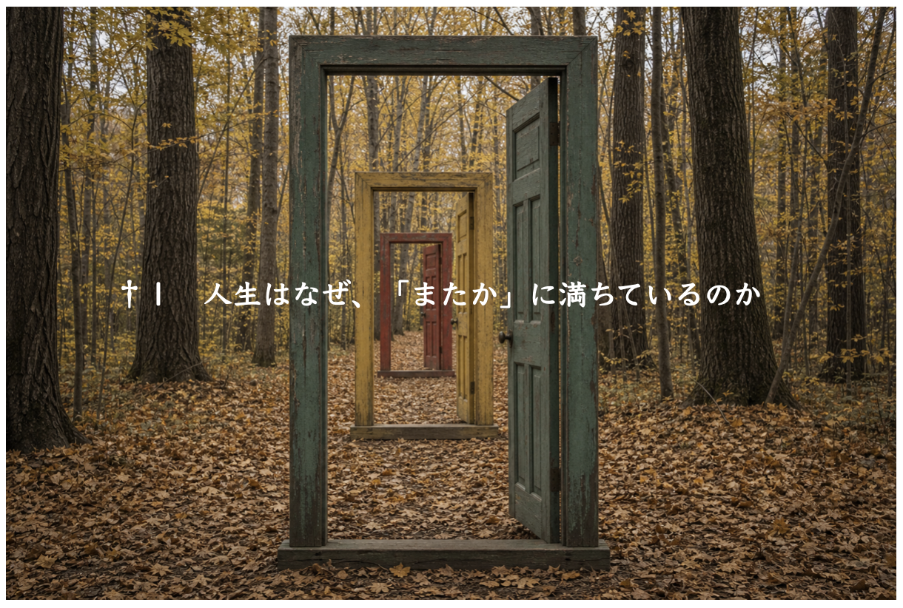
†１
私は2007年以来、ヒーリングとコーチングの仕事をしている。まずはヒーラーとして出発したのだが、体のことを見ていると、序文で述べた理由によって心にまで話が及ぶことは頻繁で、そして心は人生に及んでいる。だから心抜きには体のことも人生のことも語れない。
心について深く語ることは、私にとって特別な体験ではなく、平素のこととなっている。仕事以外の場でも、人の深い心に触れることが多い。今はじめて会ったばかりの人から、その人にとって語るのも初めてという打ち明け話をされがちだ。ひたすら話し続けた後、その人は言う。「どうして私、こんなにお話しちゃったんでしょう。初対面なのに」。そして更に話は続く。
その間、私はずっと頷いている。仕事ではないので、立ち入って助言をすることはない。しかし頭の中で、問題とその原因を解剖している。話している本人にとっては、人生の謎や、不思議や、理不尽な苦難と思えることでも、私にとってよく分からない話というのはほとんどなく、原因と結果の間にははっきりとした筋道が通っている。なぜこの人にはこの問題が起きているのか、それが繰り返し起きているのか、そしてなぜこの人はそのパターンに気付かないのか、ということに関して。
注意深く観察すると、人生は、同じ問題を何度も再現しており、それはその人の個性の一部とさえ言える。人生の段階、相手、場所、時間、出来事が変わっても、同じような感情を味わうことがある。または毎度お馴染みの壁にぶつかって途方に暮れる、あるいは疎外感を覚えるということがある。「またこれだ」という感じ。
「またこれだ」と言うからには過去がある。
どこまで遡ることが出来るのだろう。
振り返ってみると、それは子供の頃に早くも覚えのあることであるはずだ。
例えば私が覚えているのはこんな一場面だ。
幼稚園の頃、子供たち同士で遊んでいた。私たちは一人ずつ駆けっこをして、待機している子供たちは皆で声を揃えてタイムを測った。昔のことだから子供がタイマーを所持しているなどということもなく、私たちは一緒に声に出して測った。私は脚が遅かったのでこういうことはいつも好きではなかったが、それはどうでもいい話だ。
重要なのは次の場面だ。リーダー格の子が走り始めた時、皆が申し合わせたかのように一斉に、数を数える速度を落とした。それまで一律に「いち、に、さん」と数えていたのが、にわかに「いーち、にーい、さーん」になった。
私は面食らった。当然の結果として、リーダー格の子は「最速」の秒数を叩き出した。
忖度、というものを目の当たりにした最初の体験だった。
人生を振り返ると、これは確かに原体験の一つであり、早くも私自身の後の人生を予見していたように思える。子供たちは、おもねることをすでに６歳以前に知っていた。一方、私は、「空気を読め」と思われる場面でいつも心の動きが止まるのを感じた。一種の潔癖主義だったのだろう。何歳になっても染まることはなかった。この年になっても相変わらず学んでいないし、一生変わることもないと思う。
変えたいとも思わない。なぜならそれは私の個性の一部だからだ。
そのおよそ四十年後、いま私はこうしてヒーラーとして、世に染まらない、世に染まれない生き方をしていて、悲観的なわけでは決してないが、時々、生きていくことに、自分自身でいることに関して、困難を覚えることがある。もう少し器用だったら、と。しかしそうはなれないことも知っている。
このエピソードから私が伝えたいのは、いま自分が直面している問題は、遠い過去にすでに準備されていた、ということだ。
多くの人は、今日の問題は今日か昨日か、せいぜい去年くらいに始まった、と考える。それは近視眼というものだ。
私たちが直面する問題や限界は、私たちの生まれ持った個性そのものと密接に噛み合っている。自分を知らないと、問題だけが自分と無関係に発生したように錯覚する。しかしそんな問題は、天変地異や政治経済の変動を例外として絶対に起きない。
私は早くも幼稚園の頃にすでに、他の子供たちが共有している「空気」のようなものに入っていけず、頑張って入ろうとしても報われることはなく苦しみを覚えるだけだ、ということを繰り返し体験していた。それは大学生になっても変わらなかった。「皆がそうしている」にもかかわらず、私は就職活動をしなかったし、結局、就職もしなかった。卒業後はぷらぷらしていた。本を読んだり、考え事をしたり、文章を書いたりしていた。
これを表面的にのみ捉えると、私は確かに社会不適応者だった。しかし私は他にやりたいことがあることを感じ取っていて、ただし、それが何だかまだその時点でははっきりしていなかった。やがてヒーラーになることが無意識によって予感されていたのだと思う。就職しないことは私にとって怠惰な選択ではなく、逆に就職することで何か決定的な間違いを犯すことになる、という強い直感があったのでそれに従ったのだった。
もし私がその時、焦りに駆られたり、「そういうものでしょ」の考えで就職していたら、今の自分はなかったかもしれない。しかし、やがてヒーラーになったからと言って、人生がついに自分のものになったとはとても言えないほど、閉塞が長く続いた。
この世の中でどう生きていったらいいのか分からない。自分が考えていること、自分に出来ることを、どうしたら人に伝えることが出来るのか分からない。無理して伝えようとすると、ひどい疲れと惨めさを覚える。
皆の輪の中に入っていけない疎外感。
入りたいとも思えない抵抗感。
幼稚園の時とまったく同じままだった。
このように同じ問題は繰り返される。
同じ感情も繰り返される。私は、近年まで、自分は運が悪いのだとか呪われているのだとか思っていた。色々あった。クライアントから受ける感謝や信頼はこの上もないほどなのに、人生の残りの半面は理不尽な仕打ちや挫折感でいっぱいだった。しかしそれは行き過ぎた決めつけだったと今では分かる。
私が間違っていたのは半分を全部と混同したことにある。運が悪くて呪われているだけなら、専業のヒーラーとして自由な暮らしを送ることだって出来なかったはずだ。私は確かに恵まれていた。しかし、花丸満点でなかったこともまた事実だった。
これはあなたにも当てはまるのではないだろうか。良いことと悪いこと、恵まれていることと恵まれないことは、マーブル状のように、完全に溶け合うことなく混在しているのではないだろうか。
私たちは人間である以上、当然のことながら快を求め不快を厭う。
マイナスの方は、できればなくしていきたい。
ありがたいことに、なくしていける。
これは是非知ってほしいことだ。そしてそのための方法がある。闇雲に藻掻くだけでは動かない物事も、正しい方法で挑めば少しずつ変わっていく。
その正しい方法を実践するためには、前提として、宇宙の法則に対する知識が必要だ。
次に、粘り強さと、勇敢さと、澄んだ心が求められる。これらがありさえすれば必ず道は開ける。だから、マイナス要因を「仕方がない」「こんなものだ」と諦めるのではなく、どうしたら変えていけるのかを考え、その変えていくための方法を賢明に取り続けていきたいものだ。
まずは第一部の前編で、その方法の前提となる知識について学んでいこう。
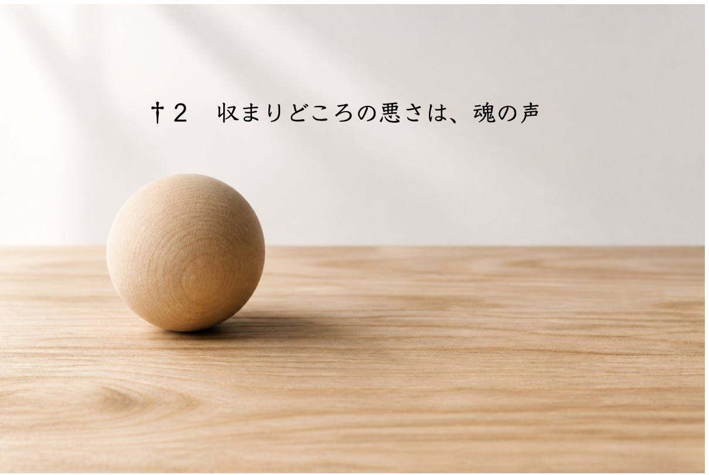
†２
同じ問題、同じ感情が繰り返され、いつも同じ壁に当たり、どうにも人生の居心地が悪く感じられる。それは単に運が悪いからではないし、努力が不足しているからでもない。
ここに一対のボールと凹みがあると想像してほしい。
あなたはボールだ。
この世界のどこかに必ず、そのボールが収まる凹みがある。それはあなたがすぽりと収まるのを待っている。
上手く行っている人というのは、自覚的、無自覚的であるかはともかく、要するにそれが出来ている。自分の活かし方が「型」になっており、それによって人生が円滑に営まれている。「型」が出来ると、永続的な循環が生じる（その循環の輪が壊れる時も人生の必然として訪れることはあるのだが、それについては今は語らず、後に取っておこう）。
もちろん、安直に人間を二種類には分けられない。一人の人間の中にも、二つ、三つまたはそれ以上の領域や側面がある。あなたが、あなた専用の穴にすぽりと丸ごと入ることにはまだ成功していないとしても、あなたの中のある一つや二つ、またはもっと多くの部分は、すでに収まりどころを見つけてはいないだろうか。そういうところは上手く行っているはずだ。快適で、生産的で、恩恵が多く、人物や環境に恵まれていることだろう。
他方には、まだ収まりどころを見つけられていない部分もある。そういうところはぎこちなく、上手く行かず、抵抗が多い。
大切なことは、人生を一度に丸ごと見ようとせず、領域ごとに冷静に見直してみることだ。かつての私のように人生を一色塗りにせず、苗木にいつも水やりをして育てるように、良い部分に対して注意を向け続けることをしてみてほしい。
あなたは仕事では嫌な思いをしているかもしれない。しかし友達には恵まれているかもしれない。または家庭内ではぎすぎすしているかもしれない。しかし仕事では自分の力を存分に発揮できているかもしれない。
私たちはすでに叶っている良い面は「当たり前のもの」として特に目もくれずに受け流す一方で、いまだすっきりしない状況に関する不満には意識を集中させてしまいがちだ。
悪い所ばかりを見て、「どうせこんなものだ」と人生を諦めるのは惜しいことだ。
理想的には、いずれそのすべてがぴたりと収まる所に収まるだろう。そうすれば人生はもっと快適になる。生きていることを素直に楽しめるようになる。そして自然体のままで人の役に立ち、感謝され、それによって生きていくことが出来るようになる。
この達成を、本書では「最適化」と呼ぶ。
ぴたりと嵌め込むと言っても、無理やりねじ込むのではない。すっぽり包みこまれるように、収まる場所は必ず見つかり、それはあなたを待っている。
これは励ましや慰めではなく、本当にそういうふうに出来ているのだ。これはこの宇宙の神秘だと思う。
しかしそのためにはまず、自分の形を整えないといけない。見事に整えられた綺麗な半球状の凹みがあったとしても、自分の方がいびつなボールだったら収まりようがないからだ。
凹、すなわち人生の方は、実はすでに受け入れる準備が整っている。
しかし凸、つまりあなたの方に、まだ収まる準備が出来ていない。
ではどうしたら凹んでいる所をふくらませ、出っ張っている所を削ることが出来るだろう？
まず前提として、自分というボールのどこが歪なのかを可能な限り正確に知らないといけない。
実はその答えを知るのにヒーラーもライフコーチも要らない（まったく営業妨害な話だ）。なぜなら実人生の現実が、あなたのボールがどんな形であるかを、年中無休で寸分違わず映し出してくれているからだ。
何によって？
実人生に対する感覚によって。
収まりどころの悪さによって。
ぶつかっている所は痛い。あるいは、いがいがする。
それを私たちは心で感じている。
だから私たちにとって、人生をより良いものにしていくために最重要のことは、現実を変えようとすることではなく、闇雲に何者かになろうとすることでもなく、現実それ自体から、「ここが収まりの悪い所だ」というメッセージを読み取り、それを投げかけられた修正の提案に変換し、行動パターンや思考回路に反映させていくこととなる。
例えばあなたと深い縁だが、あるいはあなたに利益を与えてくれるが、一緒にいるのは居心地が悪い人がいるとする。あなたはリラックスできない。いつも無理をしてしまう。相手に非難されることに対して身構えている。
多分あなたは離れるべきなのだ。その方がお互いにとって良い。
人間関係の本質は、磁石と磁石の関係のように単純だ。吸い付くか離れるか。
離れた方が良いのに、いつまでもそれに背く時、人生は不快感を私たちに覚えさせることで、理想的な距離まで両者を引き離そうとする。「近くて不快」から「遠くて良好」に好転させるために。
大切なのは自分の心を歪ませてまで無理に相手と付き合うことではなく、自分の心に、歪むことのない綺麗な円を描かせることなのだ。
不快感は単なる感覚的反応ではなく、メッセージを内包している。
あなたはその不快感を、素直に受け止めることができるだろうか？
ここで、「人生は問いを出している」という考え方を伝えたい。
アウシュヴィッツ収容所から生還した心理学者のヴィクトール・フランクルはこう書いた。
「生きる意味を問うてはならない。人生こそが問いを出しているのだから。私たちは問われている存在なのだ。私たちは、人生が絶えずその時々に出す問いに答えなければならない」
私たちは辛いことがあると「何のための人生だ」と呪うような気持ちで思う。
これが生きる意味に対する問いだ。
しかしここで知性を飛翔させてみよう。
「何のための人生だと思う？」
これが、人生が問いを出している、ということだ。
私たちは鏡を見て自分を知る。鏡に、見苦しい自分が映るのは面白くない。しかしそれを見るからこそ、「見苦しくないようにしよう」と思って、髪を梳かし、服を着合わせ、姿勢に気を付ける。人生の苦しみも同様で、それはあなたの内情が自由にでないことを映し出しているのだ。だから外的事象を見て人生を単なる我慢と妥協の連続と見做すのは間違っている。
私たちは外側ばかりを見がちだ。内側に原因があり、それが外側に反映されていることになかなか気付くことができない。このからくりを理解せぬまま現実をどうこうしようとしてもほとんど常に実を結ばないことを、あなたは多分経験的に知っている。
以前、まだ分からない頃に、「現実はあなたの映し」と言われると私はそのたびに嫌な気持ちがしたものだ。しかしその言葉は本当のことであることが今は分かる。
あなたが人から大事にされないのはあなたがあなた自身を大事にしていないからであって、それ以外に理由はない。
「いや、大事にしてる！」と怒りたくなるかもしれない。気持ちは分かる。でも大事にしていないのだ。何を以て大事にすると言えるのか、自分の中の「何を」大事にすべきなのか、まだ分かっていないのだ。そして代わりに、自分の中の「大事にすべきじゃないもの」を、大事にしている。
人生はあなたの内面を映している。まさか鏡を見て、鏡の中の自分に怒りはしないだろう。それと同じで、人生にケチをつけても始まらない。鏡に向かって、「そうじゃなくて、こうなれ！」と言ってももちろん無駄。
休みなく湧いてくる問題、いつまでも立ち消えない苦難は、単なる災厄ではない。そうではなく、改善の必要性を、あなたに教えようとしている。
この人生観を、抽象論や精神論で終わらせず、精神の技術にしていこう。
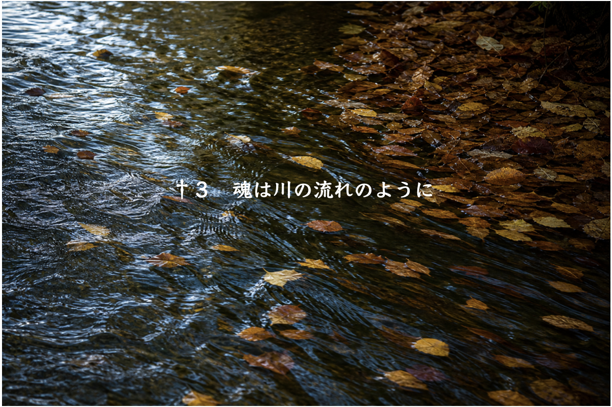
†３
現実の事象というのは、例えて言うなら、川を流れる水だ。
それはどこから来るのか？
水源だ。
では水源に近付いてみよう。
するとそこに「魂」が見つかる。ひとまず今は、「本当の自分」という程の意味だと捉えてほしい。
どんなに人生が思うようにならなかったとしても、辛い苦しみに満ちたものだったとしても、魂はいまだ一度も失われたことがなく、傷つけられたこともない。
なぜそう断言できるのか？
なぜなら、魂は、傷つき、損なわれる心の領域よりもっと深い所に息づいているからだ。
私たちは魂の水源から離れ、社会という下流で生きることに慣れている。その暮らしの中で、水がどこから流れてくるのかを忘れてしまった。しかし私たちは水源を訪れることができる。水源で何が起きているのかを知ることができる。お望みならばそこに居続けることもできる。
川が水を運ぶように、魂は声を届ける。
あらゆる障害や執着や固定観念が取り去られた後までも残る思い、考え、願い。これが魂の発する声だ。それが具体的にどういうものなのかということを先走って決めつけることはできない。時間の中で、引き算を続けていかなければ見えてこない。
あなたには様々な願いや思いや怒りや喜びがあると思う。しかしその多くはあなたの執着や固定観念と紐づいている。健康、容姿、収入、肩書、能力などに関して、人並みかそれ以上であることを私たちは喜びがちだ。
なぜ喜ぶのか？
それは、人並みか並み以上であることは良いことだ、人並み以下であることは惨めなことだ、と私たちが子供の頃から教えられ、今に至るまでずっとそう思い込んでいるからだ。これを固定観念と言う。
そしてそれを絶対の基準として何事かを求めたり拒んだりする。これを執着と言う。
しかしもっと大きな喜びや、もっと大きな喪失、人生の終わり、または人生の本質を体験した時、私たちは、人並みであることも、以上であることも以下であることも、評価基準として全く本質的価値を持たないことを知る。固定観念が崩れ、執着が消え、ありのままに現実も自己も受け入れられるようになる。
そうして見出される私たちの「それでも残る」思いや願いが、魂の声だ。
魂の声はほとんど常に、固定観念と執着というノイズによって、私たちの心の耳に聞こえてこない。私たちは川面に自らの姿を映し出したいのだが、沢山の落ち葉がきりもなく流れてくる。
この落ち葉をエゴと言う。魂の声の遮蔽物であり、私たちの心を覆い尽くしている。
多くの人はほとんどの時間においてエゴの声しか聞くことが出来ない。時々魂の声が聞こえても、すぐにそれを退けてしまう。魂はだいたいいつもこんな待遇を受けていて、聞いてほしいと願っている。
例えばあることを直感的に即座に決意する。そんな時、それをすることは絶対的に正しいと思える。どんな小さなことでも大きなことでもいい。簡単に言えば、それが魂の声なのだ。
魂の声は、多くの場合、確信を伴う直感という形でもたらされる。しかしそのすぐ後で、反論や抑止や恐れや損得勘定の声が上がってくる。あらゆる理由を並べ立て、あるいは同じ一つの理由を飽きもせず繰り返し、その決定を押し留めようとする。これがエゴの声だ。
呆れられることを覚悟で、ひとつ私がした買い物についてお話しよう。
近年で最もお金がない時に、運悪く（運良く）素晴らしいコートを見つけてしまった。一目惚れした。このコートによって、私は新しい自分になれると直感した。困ったことに、それまでに見てきた値札の中で最も高額だった。生活するにも余裕があるとは言えない預金残高の三分の一を投入すれば買えたが、正気で考えれば絶対に買うべきタイミングではなかった。しかし内なる声は、絶対に買うべきだ、と言っていた。
私は自分の頭の中でエゴの声と魂の声が二つながら響いてくるのを聞き分けていた。そして鏡の前で三分くらい迷っている内に、これはお金の問題に見せかけているものの、本質はお金の問題ではなく、私は、エゴの声を受け入れるのか、魂の声を受け入れるのか、それを試されているのだと理解した。
結局、買った。その選択は今でも良いものだったと思っているし、その時「きっと何とかなる」と確信した通り、お金の問題はその後、解決に向かい始めた。
魂は破滅的なことを囁くことを決してしない。そのコートを買う勇気を示すことが、その後の人生の道を開くことを、私は経験によって知っていた（それでも魂の声に従うのは怖かったが）。
ほとんどの場合、魂の声が荒唐無稽や向こう見ずや無責任なまでに楽観的に聞こえるのに対し、エゴの声は理性的に聞こえ、数字や過去に根拠を持っているので、私たちはエゴの声に引きずられやすい。「やっぱりあり得ないよな」と言って撤回する。私たちはこうしてその都度、魂よりもエゴを友とすることを知らずに選択している。理性的な判断をしたと見えて、その半面で霊的な判断をし損ねている。
それで魂が諦めるかと言ったらそんなことはあり得ない。魂の声が止むことは決してない。なぜかというと、魂こそが私たちの存在の本質、水源だからだ。
しかし下流に棲むものにとって水源は遠い。
私たちは体は見えるし、心のこともある程度分かるが、魂は遠くにかすみすぎてよく分からない。しかしだからといって、それで私たちが魂と無縁になるかと言ったら、そんなことはあり得ない。私たちが自己の内外によらず体験するすべてのことは、直接的にまたは間接的にという違いはあれど、魂から来る。
魂は大人しくじっとなどしていない。なぜなら生きているからだ。
魂は仮説的な概念などではない。生きているから、当然のこととして活動を続けている。そういうわけなので、水や風や木の根が、道を塞がれればすぐに他の道を求めるように、魂もまた、真っ直ぐ行けないなら別の道を取る。
迂回路がすんなり通るならいい。しかし出口が恐ろしく狭く、エゴによって、つまり「こうであらねばならない」「そんなことを許されない」という固定観念や執着によって塞がれている時もある。すると、そこでは軋む音が立ち、摩擦抵抗はいよいよ強くなり、障害物を破壊しながら、魂は前へ前へと進んでいく。
こんな時、魂の行き詰まりは、私たちの逃れられない人生の問題として、圧迫として、不調として、違和感として現れる。
すべての問題は、物分かりの悪い私たちに対して魂が行う、魂の言葉の言い換えなのだ。
では、魂にその声をそのまま語らせたら？
あなたの人生は物質的にも精神的にも実り豊かに恵まれたものになるだろう。魂の道を歩いた多くの先人の事績が、それを保証している。
それは安易な願望実現の方法ではないし、都合の良い人生を送るための理論でもない。そんなものが叶おうと叶うまいと、なお止むことのない魂の声を聞き取る術、魂の表出に進んで道を譲る術だ。それは、苦しみの時にあっても喜びの時にあっても、あなたの人生を奥深くから支え導く力になることだろう。
人生は私たちが生きる舞台であると同時に、魂からの問いが鳴り響く場でもある。人生そのものがメッセージの塊なのだ。そのメッセージを細大漏らさず聞き取れるようになった時、私たちの人生は、本来のあるがままの姿へ結び始める。
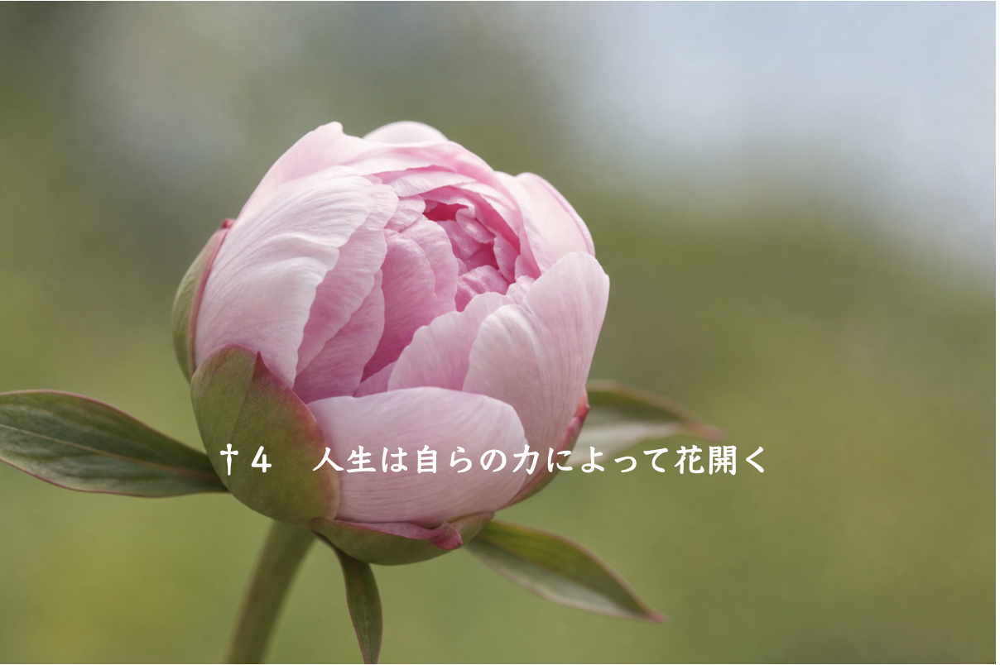
†４
多くの人は「人生設計」に基づいて生きるようだ。ある程度必要になるお金の量は決まっているし、それを確保するために適切な行動と計画がある。確かにある部分において、人生は私たちの考え次第で設計できる。しかし、では人生をすべて自分のコントロール下に置けるかと言ったら、そんなことはあり得ない。
人生設計には多くの場合、お金とそれに関することしか書き込まれないが、不測の事態、悪夢のような災難、突然の急展開はいつでも起こり得る。そういうものを抑え込むことが出来ないことは多くの人が経験している。そこで「不測の事態に備えて」という予備費用を人生設計に書き込むかもしれない。
しかしそれを超える不測の事態が起きたら？ しかもそれがお金では解決できない問題だとしたら？
これは水と堤防の関係に似ている。ある程度までは、堤防によって水の力を抑制できる。しかしその程度を超えた時、堤防は水の力の前に何の役にも立たない。
別に悪い話ばかりをしたいのではない。頭で考えた人生設計を逸脱または凌駕することは、良い方面でも起きる。
私はまさか27歳で唐突にヒーリング能力に目覚めるとは思っていなかったが、事実としてはそうなった。こんな極端なことが誰の人生にも起きるわけではないことは承知しているが、極端な場合には、こういうことが起きる。大なり小なり、誰もが、予期しなかった幸運な巡り合わせや天の采配を体験したことがあることと思う。
あなたはそれを見込みに入れて生きているだろうか。
それともそんなものは全然当てにならないから見込みに入れるべきではないと考えるだろうか。
私たちは、偶然のように起きる良いことは過小評価するが、偶然のように起きる悪いことについては過大評価する傾向にある。これは生物学的な危機回避の本能に基づくことだから妥当だが、その考えで全てを人生設計という檻の中に囲って閉じ込めてしまえば、人生は柔軟さを失う。奇跡や偶然が入り込む余地がなくなってしまう。しかし人生は、奇跡や偶然を招き入れてこそ面白く、豊かで、有意義なものになる。
私は、人生というものは自然のようなものだと思う。ある程度それを管理することは出来るが完全に支配することは出来ないし、すべきでもない。ぎちぎちに管理しようと思うと、土埃が舞うのも嫌だといって隈無くアスファルトで舗装してしまう。一方、「自然のままがいい」と言って放っておくと、その道は歩きにくい。だから程々が良い。
ではどの辺りが程々なのだろうと言うと、これは有効性や正しさの問題以上に、美学の問題だと思う。人生をどれくらい魂に明け渡すかということに関して普遍的な最適解はないはずだ。それはまた人から学ぶことが出来るようなものではなく、真似をすることも出来はしない。それぞれが自分自身の美学を少しずつ発見していくしかない。私もまた、自分の美学を読者に押し付けたいとは思っていない。ただ「こういうふうにも見ることができる」「この場所からはこう見える」との参照事例を示したいだけだ。
こういうことは生まれながらの個性で決まっているようだ。本書を手に取ったあなたはきっと、今よりももう少しか、またはもっと、人生を魂に明け渡したいと望んでいる人であることだろう。しかし不安も同時にあると思う。
そんなに上手く行くのだろうか？
そんな考えで人生を生きていけるだろうか？
現にこの考えこそが自分を現状に縛りつける限界なのではないか？
そう思っているかもしれない。
自分がこういう性格構造でなかったら、と思うことは、正直に言えば私にも時々だが、ある。しかしそれについては考えても仕方がないから考えない方が良い。
私もあなたも、生まれついたその固有の考え方しかできないのだ。これはあなたの可能性を閉ざす発言ではなく、あなたの個性を最大限称える言葉だと思ってほしい。
あなたが何度も帰り着くその考え、世界観、価値観こそ、あなたの個性の中核なのだ。
そしてその個性を守り抜きたいからこそ、魂は、世界から少し離れた所にあなたを置き続けている。あなたは物質主義のこの世界から仲間外れにされているのではないのだ。あなたはあなただけの在り方を、こうして守られてきた。
そもそも魂の個性としての考えが可塑性のあるものなら、つまり加工可能なものなら、これまでの人生、世の中に馴染めなかったはずがないではないか。個性を修正してすんなり世の中に馴染めば良かっただけの話だ。
それは出来ないと決まっているからこそ、こうなのだ。
形が変わらないことは、悪いことではなく、良いことなのだ。ただ、それがまだ収まる所に収まっていない、正しい活かし方を学んでいないだけだ。収まれば物事は最適な形に整う。自分の持って生まれた世界観や価値観を迷惑がるのではなく、肯定し、信頼する所から全てを始めていこう。
「人生設計」は、人間がその意志によって人生を自分好みに作る姿勢だ。しかしその限界を知る、または予感するあなたは、蕾が開くように、人生それ自体が内在する未来を実現していくことを望んでいる。
その姿は今の自分にはまだ見えないかもしれないが、今すでに準備されているのを知っているだろうか。
誰にも人生に対して望みがあると思う。あんな人生、こんな人生ならいいのにと羨むこともあれば、ああなってほしい、こうなってほしいと願うこともある。
それが魂の願いと一致している時、それは叶う。
一方、どんなに「私」が願っても、叶わない願いもある。
それは魂が拒んでいるからだ。
「私」は妥協の達人だが、魂は妥協に対する最大の対立者だ。
多くの人にとって、魂はエゴによる長年の幽閉によって力を落としている。人生に活力や機運や良縁が不足するのも、自己肯定感を持てないのも、感じたことに自信が持てないのも、そのためだ。
しかし閉じ込められていた魂が回復するにつれて、魂の望みは叶い始める。それは希望的推測ではなく、原理的に起こるべくして起こる変化だ。
なぜなら、魂はそれだけの決定的な力を持っているからだ。
「私」が望むものが叶う保証はない。魂が望まず、「私」だけしか望んでいない願いは取り残される。それが「私」にとって死活の問題と思えるような、何より大事なものと思えるようなことだとしてもだ。
例えば「お金が足りない」と思う。そしてお金は増えない。
なぜか？
「お金は足りている」と魂は見ているからだ。増やす必要性を見出していないからだ。
後になって振り返ると、魂がいつも正しかったことが分かる。今日まで生きてきた事実がそれを確かに証明している。
私たちの意識のバックグラウンドで、いつもこのようなやり取りがされている。
私「お金がない」
魂「あるじゃん」
私「でも足りないよ」
魂「足りてるよ。生活できてるじゃない」
私「＋αがほしいんだよ」
魂「なんで」
私「安心したいから」
魂「お金がなくても安心している人を知らない？ お金があっても安心できない人もいるよ。だからそれは問題のすり替え。お金の問題より、捉え方の問題を先に解決すべき。そのためにこそのこの欠乏。お金はまだ増やすわけにいかない。学ぶチャンスを失うから」
私「つまり」
魂「却下」
残念なことを言うようだが、多くの場合、「私」は固定観念と執着によって、魂が「問題なし」と見ている問題を、死活を分けるほど重大なことだと思い違えている。だからそのような願いはこちらがどんなに必死であっても叶わない。
魂は、本当に大事なものを奪うことは絶対にしない。なぜなら魂は創造的、生産的、肯定的な基本性質を持つからだ。本当に大事なものは必ず与える。しかし本当に大事なものを浮き彫りにするために、「私」が固定観念と執着によってしがみつくものを力ずくで取り去ることがある。
お金に余裕があると、必要なだけのお金は常に与えられていることへの有り難さに気付けない。
余裕がなくなると不足を感じるが、それでも生活は営まれる。
やがて、最低限は常に与えられていることに気付いて、恵みに感謝できるようになる。
そのことを魂は「私」に気付かせたい。お金がたくさんあって感謝の喜びを知らない人間になるよりも、感謝と喜びの心で人生を生きられるようになるために、お金を不自由にすることを魂はむしろ選ぶ。
だから叶わない願いに対して、悔しがってはいけないし、執着してはいけないと思う。そうではなく、「私はそれほどまでに魂が欲しくないものを欲しがっているのか」と考える機会に変えるのが望ましい。これは厳しい体験だが、そのようにして私たちは自分がどれほど魂とズレているかを知ることが出来る。
この話だけだと、魂のその過剰とも思われる禁欲主義的な求道精神を、私たちの平安を脅かす空恐ろしいものと感じるかもしれない。しかしこれは魂の性質のあくまでも一面だ。
魂は単に、純粋なのだ。純粋ゆえに不純を嫌う。そして純粋を愛する。
「魂はこんなことを願っていたのか」と驚かされるような美しい願いも、魂は描き出す。
私はチェロを弾くのだが、最近プロの演奏家たちと共演する機会があった。私はアマチュアであり、それほど上手くない。常識的に考えれば場違いもいいところだった。この機会を、私が自分から探し求めたのではなかったという事実は重要だ。その話は、思わぬ形で転がり込んできた。普通ならこんなことは絶対に起きない（「普通なら絶対に起きない」ことを起こすのは、魂の得意技だ）。
プロ演奏家たちの水準に可能な限り近付くために血の滲む努力をし、最終的には良い演奏ができた。こんな機会でもなければ得られない高度な指導を受けることもできた。誘ってくれたフルート奏者は、心からの称賛を送ってくれた。演奏者たちはいずれも、私が未熟者だからと言って侮ることも高圧的になることもなく、一切を丁寧に導いてくれるような優しさに満ちた人たちだった。おかげで私は心から演奏を楽しむことが出来た。
このように、魂が望みを叶える時には、確率論的にあり得ないことが、ほとんど摩擦や抵抗なしで起きる。
逆に「私」だけが叶えようとする望みは多くの摩擦抵抗を受けやすい。
計ったかのように物事が上手く進んで驚かされた体験があなたにもあるのではないだろうか。そういう出来事は、単に「運が良い」とか「ツキが回ってきた」というよりももっと深いレベルの現象なのだ。逆に、万全を期しても上手く事が運ばず、結局は時間や労力の浪費に終わったこともあるだろう。そんな時、「私」だけが空回りしている。
この小さなエピソードには、魂と「私」の考え方の違いが浮き彫りになってもいる。
「未熟なアマチュアがプロと共演するような機会は、結構なお金でも払わない限りあり得ない」
「プロはアマチュアの技術不足を迷惑がることだろう」
そう「私」は思い込んでいた。
これはかなり普通の考え方だと思う。
しかし魂はそういう考え方をしない。素晴らしい演奏家たちと演奏したいと魂が望めば、一緒に楽しんでくれる演奏家を引き寄せて現実を起こす。
更に言うと、彼らと共に演奏したのは、私が「いつかは演奏してみたい」と心密かに17年ほど願っていた楽曲だった。どうせ叶うはずもないから叶わなくて良いと思っていた夢を、驚くべき方法で魂は実現した。
こんな時、私が易々と諦めていたことを、魂は諦めるどころか追い求めていたことを知り、そのギャップに驚く。
だから何なのか？ それで音楽家としての道が開けたわけではないのだろう？ お金が入ったわけでもないのだろう？ と思うかもしれない。
ここにも「私」と魂の考え方の違いが見て取れる。
魂はそういうことを問題にしないのだ。
喜ぶこと、輝くこと、自分の潜在性を発揮することに、魂は最重要の価値を置いている。そしてそれは、私たちの予想を超えた形で未来を創造する。
「魂は喜びたい」とだけ聞いたら、「私に必要なのはそんなことではなく、もっと現実的なものなのであって…」と反発したくなるかもしれないが、魂の喜びは、私たちの「人生設計」がほとんど子供のままごとに感じられるほどの大きな恵みを後程もたらす。これは実際に体験して確認してもらうしかないことだが（実現の日まで内容は非公開、というのも魂の特徴だ）。
しかしこのことに関して神秘的なことだけを言って読者を煙に巻きたいわけではないので、もう一つ自分の体験談を述べる。
私はただ魂が喜びたいのに任せて絵を描き始めた。32歳のことだ。これまでに売れた点数は結構な数に上る。絵で副収入を得るなどという「人生設計」はなかった。しかし結果としてはそうなった。
魂の喜びはこういうふうにちゃんと実人生に恵みをもたらす。それがすぐに起きるか、後で起きるかの違いがあるだけだ。魂の喜びは、不発弾には絶対にならないと私は信じている。
大切なことを言っておきたい。
魂が喜ぼうとする時、だいたいは面倒くさいことだ。
私は好きで絵を描いているのか、チェロを弾いているのか、と言えば、必ずしもそうだとは言い切れない。絵を描くのは億劫だし、チェロを上手に弾くのも神経が疲れる。しかしそれは魂が望んでいることなので、私はそれをする。楽々できることから楽しいのではなく、あとで魂が楽しむために今の努力をする。
「私」は、魂の喜びに付き合う必要があり、付き合うことで一緒にそれを喜べるようになる、と言える。だからこれは「いいですね、好きなことがあって。趣味があって。才能があって」という単純な話ではないことがお分かり頂けると思う。
才能があってもなくても、魂に従うことは面倒だ。
しかし魂に従えば大きな報いを受けることができる。
魂は放っておくだけでは勝手に喜ばない。しかし魂はいつも喜ぶ機会を探している。だから魂に関しては、「努力してその喜びに寄りそうと、実利的な恵みを返してくれる何者か」と見做すのが生産的な認識ではないかと思う。
魂にとって願いを叶えることは簡単ではない。私たちがエゴによって、面倒くさい、そんなに上手じゃない、お金も時間も手間もかかる、どうせお金にならない、プロじゃない、恥を掻いたら、失敗したら、別にやらなくても、と言って魂の願いを頻繁に却下してしまうからだ。
チェロ演奏の機会に話を戻すと、私は技量不足を言い訳に断ったかもしれないし、謙遜して辞退したかもしれない。本番までの間には、重圧に押し潰されそうになって降りようと思ったこともあった。
精神の安定を脅かす挑戦は恐ろしい。同じ状況に置かれたら、あなたはこのような機会を掴むだろうか、それとも流れて消えるままにすることを選ぶだろうか。
何かを得る時、何かを失う時、「これは魂が実現しようとしているのだ」と正しく見抜くことが出来ると、状況に対する適切な振る舞いをすることが出来る。そうでないと、自分のエゴに基づく判断によってせっかくの好機を逸してしまう。
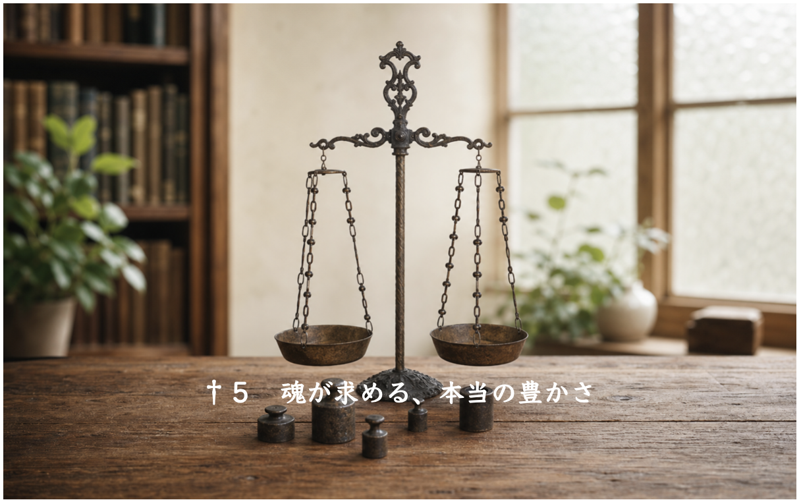
†５
願いが叶うことが幸せで、叶わないことが不幸。私たちはそう考えやすい生き物だし、その考えを中心に人生を評価しがちだ。しかし現実には、「私」の願いが叶っても魂が満足しないことは多くあるし、あるいはその願いを無理して叶えようとすることで、魂が苦しむこともある。
近くまでしか見えない人は、願いを叶えた後で、それが間違いだったことや、それが本当に欲しいものではなかったことを知る。社会的経済的に成功した人が、そう言うのを聞いたことがないだろうか。家族も健康も犠牲にして社会的成功を収めたが、本当に大切なのは失った方のものだったと気付いた、というような話だ。それは、その願いや求めたのが「私」一人が思い描いたものだったからだ。華々しく見えた箱を開けたら、中に入っていたものは空虚だった。それは魂の声が聞こえた瞬間なのだ。
遠くまで見通せる人は、無意識にそれを知っている。恐らく子供の頃から知っているのだと思う。だから世間並みの願いを叶えることにエネルギーが向かわない傾向にある。その人自身の意志によって、というよりもはるかに強く、魂の意志によってそうなる。結婚や成功やお金などに関して、どうしてこう世間並みになれないのだろう、という思いをあなたは抱いているかもしれない。しかし「なれない」のではなく「なりたくないのだ」。あなたが、ではなく、あなたの魂が。
再び、世の中には二種類の人間がいることを私たちは知る。「魂の声より私の声が強い人」と、「私の声より魂の声が強い人」だ。しかし前者もまた上述の成功者のように、いずれは魂の声を聞き取り、人生の本当の主人を知ることになるだろう。
結局、人間が、「私」と魂の二重の存在である事実に変わりはない。人間には、エゴに根差した願望があり、それは生物学的構造と深く関わっている。自己保身、闘争と逃走、恐怖と欲望による反応。これは本能的なものだ。しかしその奥には、魂の指向性がある。これは生物学的構造の限界の先にある。
闘争と逃走によって自己保身をするのは一見、理に適っているが、この因果と連鎖は魂の次元においてすっかり反転する。自己保身、闘争と逃走、恐怖と欲望に反し、それらを超克する愛と調和によって（これらの概念については後述する）、自己を含めた「全体」を繁栄させる力がそこでは優勢になる。それは実人生に対してはるかに大きな強靭さと生産性をもたらす。
肉体の次元からしか世界を見られない人にとっては、こんな考えは単なる綺麗事、地に足の着かない抽象論のように見えるだろうが、そんなことはない。程度の開きこそあれ、世の中にいくらでも例は見つかるから探してみてほしい。
利己主義的、逃走的、闘争的な、家庭、会社、組織では、人はぞんざいに扱われ、生産性も強靭性も低い。そこでは人がいがみ合っていて、互いの腹の内に対して疑心暗鬼になり、傷つけ合う。防衛と警戒と報復のためにエネルギーをいたずらに消耗する。
その反対側に位置する家庭、会社、組織では、人は尊重され、生産性と強靭性が高い。理由は単純で、無駄なエネルギーを浪費しないからだ。人はのびのびしている時に最も力を発揮することができる。
近視眼的には、防衛的、闘争的、利己主義的な態度の方が堅実に現実に対応できるように錯覚される。しかしその姿勢は長期的には大きな機会損失をもたらす。
一方、愛と調和に基づく人生態度は、あらゆる状況に対して自分を曝け出しているので無防備のように見えるが、長い目で見ると、豊かさを保証する。
なぜそうだと言えるのか？
ここに、利己的で、あらゆることを警戒し、備える人と、利他的であらゆることに心を開き、順応することができる人がいるとしよう。表面だけ見ると、両者の間に目立った差はないかもしれない。両者とも同じくらいの収入を得、同じような構成の家庭を持っているかもしれない。同じような家屋、同じような自家用車。
しかし更に近付いて見てみると、そこに大きな違いが見て取れる。
利己的な人は、戦うことや身を守ることによってその暮らしを成り立たせているが、利他的な人は、楽しむことや与えることによってその暮らしを成り立たせている。それがふとした瞬間の顔つきや言葉に出るし、伴侶や子供に対する態度に出る。幸せの「形」は似ているかもしれないが、「空気」が違う。前者の振る舞いには叱責や舌打ちや不満が多いことだろう。後者の振る舞いは笑顔や労いや感謝が多いことだろう。
私たちの人生の雛形は、人生観そのものにある。人生観の展開型が、人生なのだ。
だからその時ごとの現実状況が自分にとって完全に満足行くものであるかどうかよりずっと、人生観が健全で生産的で肯定的であることが重要だ。人生観を決定するのは日々の精神状態の積み重ねであり、それを醸成するのは生活の「空気」だ。
ある人はどれだけお金を持っても足りないと思う。欠乏感や飢餓感の「空気」を纏っているからだ。別のある人は、お金はそれほどないが、そのことで精神を腐らせることなく、できる範囲で人生を楽しむ。
あなたが望むのはどちらだろうか。
真に生産的と言えるのはどちらだろうか。
人生観さえ前向きならば、たとえ困難な状況でもそれを肯定的、生産的な文脈に収めて認識し、対応することが出来る。結果、困難な状況は遅かれ早かれ解消されることになる。なぜなら「解決できる」という、人生に対する信頼は、現実的に解決の道を必ず見つけ出すからだ。
これは私がそうだと主張するのではなく、実際に周りの人を見るとそうなっている事実を確認してほしい。
逆に、人生観が否定的だと、どれだけ環境に恵まれてもそれを喜ぶことができず、ぎすぎすした感情やさもしい思考を延々と繰り返すことになる。
重要なことは、いずれの道を取ろうとも「形」を獲得することだけならできる可能性があるが、利己的な道では「愛と調和の空気」を纏うことは決して出来ないということだ。しかし愛と調和の道を取るならば、「形」も「空気」も得ることが出来る。
その願いの発祥が利己的なエゴにあるのか、利他的な魂にあるのか。それが、人生の体験内容を二分する。
魂がありのままに花開いていくその営みに積極的に参与していくことが、回り回って、あるいは即座に、実人生に恩恵をもたらす。
エゴを抑制し魂に従うことは、非現実的な夢想ではないし、あるいは悲壮感のある禁欲や殉教でもない。あなた自身にとって最も利益のある在り方なのだ。精神的、霊的な利益は、満たされた心や自己肯定感をもたらすだけでなく、物質的な富も力も余裕ももたらす。
利益追求を忌むべきものだと思う必要はないし、そう思うことは間違ってすらいると思う。命あるものはいずれも利益追求に勤しむものなのだから。すなわち、食べ、生き、栄えようとする。
つまりここで言っている利益は「企業利益」などとは別の、もっと本質的な利益だ。この、生きるために当然の務めとその達成に対して背を向けることは、生命に対する不遜な反逆とすら私は思う。ただし、それは必ず、利他的、共栄的な経路による利益追求であるべきだという点が重要だ。利己的、独占的な利益追求が間違いであるに過ぎないのであって、潔癖主義によって利益追求そのものを否定するのはおかしなことだ。
そうは言っても、利他の精神と、利己の欲求の実現を同時に叶えることは最高難易度の精神の技と言える。私たち人間は中庸を得ることが難しい。だから古来、宗教は、そうであるならばいっそ富や快楽に背を向けた方が良いと教えてきたに違いない。しかしこの物心二つながら叶えるという目標は絶対に達成できないものとは思わないし、人間はそれをしてこそ本来の可能性を開花させきることが出来ると私は思う。
「物心二つながら叶える」ということについて、私の事例を話したいと思う。
著者自らが自分の話ばかり事例に挙げるのはあまり良い趣味だとは思わないのだが、そうするには理由がある。
人の一生には浮き沈みが付き物だ。そしてその全てを観察することができるのはその人自身だけだ。このような事柄を語るに当たって好例と思えるクライアントの話はいくらかある。しかしその人の、そこに至るまでの道と、それからのことを私は全て知っているわけではない。物語のクライマックスのような大きなカタルシスの後、新たなる困難のステージが始まったり、あるいは一見「悟り」と思えた精神的体験は単に現実から目を逸らしただけだったということが後になって分かるというようなこともある。部分的に知っているだけの他人のエピソードを、自分の都合に合わせて引用するよりは、前後関係や内実をよく知っている自分自身の話を紹介した方がよほど誠実だし、為になるとも思うので、あえてそうする。この考えは、これ以降の話の展開においてもご承知おき頂ければと思う。
私は時間的にも経済的にも精神的にも余裕のある暮らしを長らく送っている。しかし贅沢に暮らしているわけではなく、質素にやりくりしている。前の部分でお話したように、ここぞという時には大枚をはたくことを厭わないが、基本的に浪費しない。経済的にとても豊かとは言えないが充分に恵まれていると思う。
私は自分が望む生き方を二十代の前半で心に決めた。楽して暮らせるようになりたいと願ったのではなく、「自分という存在をありのままに展開していけばそれで人生が成り立つはずだ」という人生の可能性を信じ、その実現に向けて行動してきた。そして実際にそうなっているので、これは少なくとも一つの標本になると思うのだ。
「あなたは運がいいだけだ」と思うかもしれないが、そのような運を作るのも、その人の心がけと取り組み次第だと私は思う。そう信じてその道を行くからそれが実現する可能性が残されるのであって、それを信じず、その道を歩かないなら、決して実現しないはずだ。
同時に、それでも現時点において、自分がかつて思い描いた地点に辿り着いているとは思わない。人生は長い時間をかけて彫り上げていく彫刻のようなものだと思う。私は道半ばの者としてお話している。
私がお伝えしたいのは「あなたもこうなれ」ではなく「あなたもそう信じることができる（信じたければ）」ということだ。
当たり前のことだが、誰もあなたに保証することはできない。信じるということは、疑いがあるにもかかわらず自分でそれを信じることを選ぶということだ。
「自分らしくある」生き方と「自分らしくない」生き方の間に絶対的な断絶があるわけではなく、後者から前者への道はあたかも階段のように続いている。
「自分という存在をありのままに展開していけばそれで人生が成り立つはずだ」と私はもっと若い頃に信じることを始めたが、「ありのまま」を実現していくために、そもそも自分にとって何が「ありのまま」なのかを理解していくために、いくつもの段階があった。
私を含め、いくらかの人には、自分にとっての「ありのまま」があまりにも自分自身の実感や感情や、辿ってきた道からかけ離れていて、まったく認識できないことがある。そういう段階の人に「ありのまま」にと言っても現実的ではない。頭を抱えてしまうだけだ。
誰もが即座に「ありのまま」や「自分らしく」を標語にすればそれで一挙に形勢逆転するわけではないのだ。それは自分自身の変化と深化を信じて追い求めていくことによってのみ、次第に像を結んでいく。
「自分らしく」「ありのまま」へと向かう階段を登り進めるにつれ、時間的、経済的、精神的に豊かさを得る。少なくとも私の目にはそれが法則であるように見える。一方、その階段のまだ始まりの所にいる人は、実人生の多方面において苦しそうだ。
誤解のないように言っておくと、この文脈で言う「豊かさ」は、客観的である以上に主観的なものだ。
どういうことかと言うと、「自分らしく」生きている人は、例えば忙しさの中のわずかな時間にも立ち止まり、心を静かにすることができる。慌ただしい日常の中でも、喜ぶことを忘れない。お金に余裕がそれほどなくても、安物で妥協することはなく、満足の行く買い物をする。現実問題に取り囲まれても、そのことでパニックにならない。苦しくても他人を粗末にしない。
逆に、物質的、数量的にはどんなに時間に恵まれていても、一日中ネガティブなことを考えたり、あるいは沢山のお金に恵まれていても、いつも「無い、無い」と言っていたとしたら、その人は豊かな人生を送っていると言えるだろうか。
豊かさは主観的なものなのだ。もちろん、物理的なレベルで最低限、保たれないといけない線はあるが、そこより上は完全に主観的だ。
「自分らしく」「ありのまま」に生きる姿勢が、豊かさを下支えするのであって、逆ではない。
私はそう信じているし、そのように生きている。
あなたもそう信じることができるだろうか？
そう信じて、今日から行動してみたいだろうか。
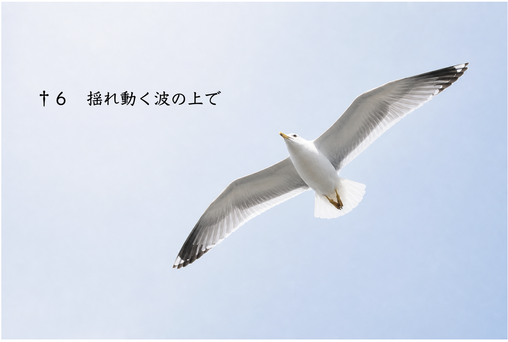
†６
魂の姿が、与えられたまま、「ありのまま」に映し出されるようになると、魂は現実の中に居場所を見つける。
最適化ということだ。
魂という「ボール」を歪にしている型崩れや、精神的角質に吸着してしまったゴミを取り去ることは、育った家庭や社会によって教え込まれ身につけてしまった思い込みや決めつけから自由になること、不毛な無理をやめ、欲深さと焦りに基づく願望を捨て去ること、そして良いものも悪いものも、投げかけられた現実を素直に受け取り、適応していくことを意味する。
誰もが個性を持って生まれる。体の個性、心の個性、人生の個性。何もかもがその人だけのオリジナルだ。周囲の人々は明らかな形で、またはそれとなく、その個性を認め、褒め、求めてくれる。それに応えて素直に反応する。内側にあるものを表して見せる。すると人がそれを認め、喜び、何かを返してくれる。
この循環が、最適化の最も分かりやすい一例だ。
これはとても難しいことでもある。褒められても真に受けられず、頼まれても恐れて挑戦せず、感謝されても自己卑下で応え、返礼を断ってしまうことがある。
最適化とは、何か足りないものを外に見つけて新たに搭載することではない。すでに内にあるものを、誘いと導きに応えて外に送り出していくことなのだ。
しかしそれは楽々達成されるのではない。この魂の性質の出荷は、必ず乗り越えられるぎりぎりのストレスと共にそれはもたらされる。
なぜなら魂は「ぎりぎり」や「ひりひり」を楽しむ。というのはその時こそ、生きている実感が得られるからだ。何の刺激も困難も伴わない喜びは、魂にとっては栄養のない砂糖菓子に過ぎず、そういうものに興味を示さない。できると分かりきっていることはやりたがらないのが魂だ。
だから魂の道を生きる人は、ストレスのない状況に安住するのではなく、新たな挑戦がもたらすストレスによって、常にひりひりした人生を生きる。それは創造性に欠かせない、自己成長や拡張の触媒としてのストレスなのだ。
この創造的ストレスを織り込み済みのものとして、の話だが、最適化された人生は平たく言えば、好きなこと、出来ること、やりたいことをすることで成り立つようにできている。理想的には、あなたが、ただあなたとして生きているだけで良いという状況が出現する。必ずしも、楽々生きることを意味するのではない。難しい波に乗れる者だけが、より良い波を活用することができる、ということだ。
「波に乗る」というのは、単に「調子づく」ということを意味しない。そうではなく、落ちない努力をすることで、波に乗っている状態を能動的に保つということだ。波はいつも揺れ動いている以上、ここに永久的な安住はあり得ないはずだ。
そのことを理解するために、私たちの原点に立ち戻ろう。
人間は、言うまでもないが生命だ。
生命とは何だろう？
それは環境に対する終わりなき最適化の過程の全体だ。
環境はまさに波のように常に揺れ動き続ける。だから生命も揺れ動き続けることで適応しなくてはならない。
人間だけがそれを嫌がるという発想を持つ。その最たる例が「環境が悪い」という言葉だ。
言い分は分かる。私もずっとそう思ってきたし、客観的に見て実際その通りだということもある。ただ、それが事実であることと、それを停滞と怠惰の言い訳にすることの間には大きな開きがある。
ずいぶん人生が進んでからやっと、私は考えを変えることが出来るようになった。
「それは事実だが、それを言っても仕方がない。与えられた人生を良くしていこう」と。
そのように心が変化する以前には、自分の果たすべき変化と適応の必要性を、あたかも自分自身に対する侮蔑であるかのように捉えていた。
「私が悪いというのか」
そう思うことがよくあった。
この怒りは現実の否定であり、それを更に遠くまで延長させると、その先に、「人生は私の思い通りにならなくてはならない」という硬直的な考えが生じる。それは自分好みの現実の実現であり、私たちはそれを達成目標にしがちだ。
家族、恋愛、仕事、お金、成功、その他諸々のことに関して、私たちはゲームの「あがり」を期待する。
しかしそれは生命の本質から何と遠く隔たった考えであることか。
生命活動の現実に「あがり」などというものはない。
「いつまで続くんだ」と愚痴をこぼす人間に対して、地球上の全生命はぽかんとして言うだろう。
「いつまでも続けるんだよ」と。
もっと切り込んで批判すれば、こうも言おう。
「この星では生命はずっとそうしてきたよ。あなたは自分を何だと思っているの？」と。
こういうことを聞くと、「人間は人間だ。動物や植物とは違う。はるかにずっと高度で複雑でこんがらがっているんだ」と言いたくなる人もいるかもしれない。
それはそうだ。しかし、レベルが違うと言っても土台が同じであることを忘れてはいけない。
私たちの心臓は、私たちが「人間にだけ与えられた高いレベルの意識」によって動いているのだろうか。
そうではない。原初的、生命的なレベルで営まれており、私たちは言ってみればその上に「人間の人生」という高い塔を建てた。
大地から切り離されたかのような高層ビルを見て、あなたは目を輝かせるだろうか。それとも虚しさ、危うさ、馬鹿馬鹿しさを覚えるだろうか。
もし後者なら、自分もまた、自分の生命、内なる自然に対して同じことをしているではないだろうかと考えてみてほしい。
人生は何に拠って立っているのか？
拠って立つものがある以上、その根本に立ち返ることが必要ではないか？
私たちは可能な限り「生命」でいて、必要な時にだけ「人間」になったらいいと思えないだろうか。疑いもなく「人間」だけをやっているから、予期せぬ瞬間に人生に裂け目が生じて「生命」の真実があらわになった時、私たちは脆い。
何事を達成しようと、何事に挫折しようと、その後も人生は続く。
変わり続ける現実に対してどう適応を続けていくのかということが重要だ。
幸せも達成も、真空パックには出来ない。挫折も喪失もまた時間の中に冷凍保存されはしない。掴んだ瞬間、出現した瞬間にそれは形を変え始める。
私たちは波乗りに熟達していくしかない。波が揺れることに不満を言ってはならない。揺れる波の上で立っていられるようになるまでだけだ。そうするしかない以上。それが人生のあるがままの姿なのだ。
「こんなものは自分の望んだことじゃない。普通こうあるべきだ」と言って応答をやめる時、人生は停滞し、硬直し、活力から切り離される。あらゆる問題はこうして生じる。
しかしたとえどんなに抑圧されてもなお、生命は、状況の健全化を図る。そのために、人生に問いを映し出す。多くの場合、私たちが覚える不快感や違和感によって、人に対して、状況に対して、在り方に対して、家庭内で、仕事場で、人間関係において。
あなたは本当にその生き方でよいのか、そこに居続けたいのか、と。
人生が同じ問いを繰り返すのは、生命が本来の流れを取り戻そうとしているからなのだ。
その本来の流れを押し留めているのは他の誰でもない、私たち自身なのだ。
その過程で、エゴにとっては都合の悪いことが起きる。
見たくなかった自分を見ることになることもあれば、終わらせたくなかった関係が終わることもある。得るはずだったお金を失い、出来るならば避けたい痛みを負う。守ってきた自己像が崩れ、すがっていたものが取り去られる。逃げ続けてきた恐怖に直面させられる。
エゴがこれを無期限先延ばししたくなるのも分かる。
とっくにやめるべきことなのにまだやめていないのはなぜなのか？
それは、それをやめることで生じるであろう欠乏や困難や後悔を、エゴが避けようとするためだ。
魂は、やむにやまれぬ状況では強権を発動するが、そうすることはそう多くない。もっと多くの場合、「まだそんなに握りしめているならば」と、エゴの歩みに足並みを合わせる。これは聞き分けのない子供に対する親の態度のようなものかもしれない。
人生経験を重ね、「しがみつくべきでないものにしがみついているのだ」とエゴ自らが気付き、生き方を改めたいと思うに至った時、魂はその握りしめていたものを取り去る。理想的にはエゴは静かにその喪失を受け入れられれば良いが、土壇場で嘆きにむせぶかもしれない。
人生がそのあるがままの姿を開花させようとする時、エゴはその都度、死ななくてはならない。私たちが苦しみを覚える時、それはエゴの体験する痛みであり、しかしそれと引き換えに魂は力を取り戻している。
私たちは、エゴにとって望ましい出来事を「良いこと」と呼ぶことに慣れ親しんでいる。
そしてエゴにとって不都合な出来事を「悪いこと」と呼ぶ。
しかし、この見方では、人生に起きていることを正しく認識することも、それに対して正しく応答することもできない。
失うことで大切なものが明らかになることもあれば、得ることで大切なものが見えなくなることもある。不快な体験によって魂の進路が浮き彫りになることもあれば、傷つくことで成長が促進されることもある。
かくして、エゴという片方に比重が置かれすぎたシーソーは、本来の望ましい状態に回帰しようとする。
魂の視点から人生を見るとは、あるいは今はまだそうは出来ないとしても、そうあろうと努めることは、出来事を単に感情だけで判断してそれで終わりにしないことだ。「自分はそれをどんなに不快に感じたか」よりも、「それは自分をどこへ向かわせようとしていたのか」を知ろうとすることが、はるかに重要であり、生産的な未来をもたらす。
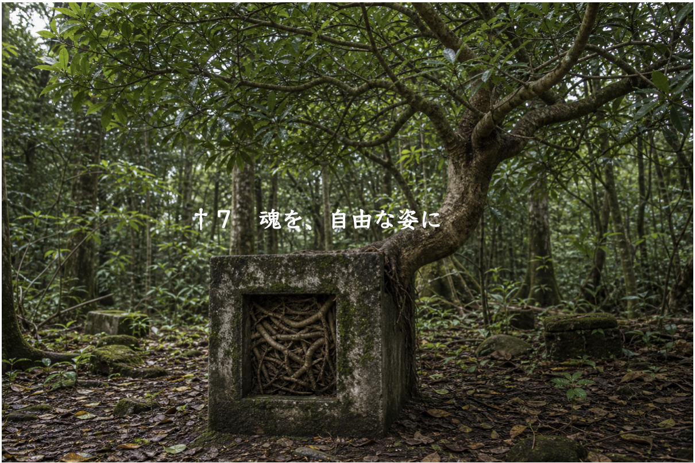
†７
エゴの喜び苦しみに囚われるのか、それとも魂の死活を念頭に生きるのか。
いずれの生き方を良しとするかは、人生の初期設定としての複雑度が関わっている。これは先天的な決定要因だと思う。複雑な構造の人は単純構造にはなれないし、逆も同様だ。これは、それぞれの魚が海の深さのどの辺りに棲むように生まれついているかというのと同じだ。
私が言いたいのは、複雑な方が上等だとか、単純な人は未熟だとか、そういうことではない。しかしそうは言っても、この言葉で人を分類することは誤解を招くだろうから、「形を見る人」と「空気を見る人」と言い換えることにする。
概して、「形を見る人」は世間一般の成功や達成を得やすい。
「空気を見る人」はなかなかそうは行かない。形の上では幸せ、豊か、活発でも、それ以上に「それはどんな幸せか」「どんな豊かさか」「どんな内容によって活発か」ということが気になり、それが充分に満足の行かないものだと、むしろ要らない、という選択をする。そのため得るものが少なくなる。
「形を見る人」は「空気を見る人」を繊細すぎるとか考えすぎると見做すが、「空気を見る人」からすると「形を見る人」は過度に現実主義的または成果主義だと見える。
これは生き方の違いだから仕方がないし、是非を争い合うのは良くない。ただ、私は「空気を見る人」の側に立って話している。私自身が「空気を見る人」だし、「形を見る人」は私の話などまどろっこしくて聞きたくもないということは、経験上分かっている。
「空気を見る人」は、それがやり方と結果に関して良いか悪いかは別として、自分の心の反応を精妙に見て吟味する。もちろん、「形を見る人」が物事を選択したり行動に移したりする時に、一切吟味をしないという意味ではもちろんない。そんな人間はいはしない。しかしそれでも両者の間には確かに行動と選択に関して方向性の違いがある。
この世界では「空気」より「形」が整っていることが広く一般に重視されるし、そういうものほど市民権を得ている。そしてそういう所でこそ多くのお金が回っている。結果、「空気」よりも「形」を重視する「形を見る人」は、この社会経済構造から多くの恩典に恵まれやすく、人生に対して肯定的楽観的になりやすい。一方、「空気を見る人」は、自分の好みに合うものの絶対量が少ないので恩典を受けにくく、結果、否定的悲観的になりやすい。
私たちはこれを損失と考えがちだ。
なぜそう考えてしまうのだろう。
それは、自分自身が「空気を見る人」であるにもかかわらず、社会の標準に合わせて「形」に価値を置き、幸せの「形」の達成に惹きつけられてしまうからだ。そしてそれを実現できない自分を半人前と評価してしまうからだ。しかし深い海を泳ぐ魚が水深の浅い所に憧れて浮上したら、生きづらいことこの上ない。
「自分はそうではないのだ」と知ることが大切なのは、それによって、自分がどうあがいても得られないもの、つまり魂が得ようと望んでいないものを得ないことは至極自然なのであって、損失ではまったくないのだ、ということを徐々に受け入れていく前提を確保することを可能にするからだ。もちろん一朝一夕に考えは改まらないから、馴化には時間が必要だ。世間一般の幸せや答えが手に入らないならば、自分だけの答えを見つけ出す必要がある。
魂は決して、何も欲しくないのではない。先程述べた私の演奏体験のように、欲しいものははっきりとある。叶えたいこともしっかり持っている。
事が上手く運ばないのは、私たちがエゴによって魂の自然の表出を邪魔しているからだ。
繊細な感受性は傷つきやすいが、同時に大きな力を秘めていると私は信じる。あなたに与えられたその感受性が生きる道は、日に日に用意されており、隣の部屋で豊かに成長している。与えられた現実の中でそれをどう花開かせていくのかということを、魂は毎日休みなく問いかけ、語りかけている。抽象的にではなく、現実的に、実人生の出来事とそれに対する心の反応を通して。
魂に則して生きることは、現実の否定ではないし、浮世離れすることでもない。最適化の意味する所は、生存の効率の最大化だ。ただその方法と手順が、世間一般と逆転しているに過ぎない。
「空気を見る人」であるあなたは、「形」への固執をやめ、魂の声を聞き取り、その声と共に歩くことによって幸福を得る。それは人生がすべてあなたの思い通りになることによってではなく、魂の思い通りになることによって実現するのだ。
「私は別に『形』に固執してなんていない」と言うかもしれない。
しかし私はあえて、「いいえ、あなたは『形』に固執している」と言わせてもらうことにする。
なぜなら「形」に固執していない人間などいはしないからだ。
ずいぶん前のことだが、私は離婚して子供とも別れて暮らすようになった。痛みを覚えて更にしばらくの時間を経て後、ようやく気付いた。幸せの形に固執していたことに。気付かなかったのは、それを当たり前の前提にしていたからだ。
「だってそういうものでしょう」と。
誰がそれを決めたのか？
世の中の流れがだいたいそんな感じだから、私がそう決めたのだ。
では世の中は正しいのか？
私はそうは思わない。
それなのに世の中の大勢を参照して、私は「正しい形」を決めつけていた。決めつけていたことを知らなかった。だからそれに反する人生の現実が立ち上がった時、痛みを覚えた。
私はヒーラーという仕事をしてきた。流派もなければ資格もなく、自己流の自由人として、傍目から見れば、私は、少しは形を入れた方がいいんじゃないかと思えるくらい、「無形」の人生を生きてきた。それでもなお、私の心の奥深くは「形」によって雁字搦めだった。
「形」に固執していない人間など存在しない、というのはそういうことだ。あるレベルやある領域では「形」から自由でも、異なるレベルや領域において、私たちは何と不自由で、人生を制約していることか。
だから「形を見る人」と「空気を見る人」と言ったが、その二種類の人間は、私たち一人ひとりの中にいるのだ。私の中のある部分は、形に囚われず自由だ。他の場所は形にしがみついている。
全ての「形」を破壊しなければならないなどと極端なことを言っているのではない。あなたが何を手放さなければならないかということを、あなたは何も問題が起きていない時に自分で先回りして考える必要はない。魂は、その更なる実現のために今邪魔になっている「形」を私たちに示す。木が大きく育とうとしている時、その妨げとなる根の囲いを外そうとするように。そしてそれを魂は現実問題とそれに伴う不快感によって示す。
「私が願う通りにする」とは、自分の意識が望んだ形へ現実を従わせようとすることであり、一方、「魂が願う通りする」とは、魂に内在している姿が、現実の中で自然に表れていくことを許し、見届け、痛みと引き換えに道を譲るということだ。
現実を克服すべき対象と見るか、対話の相手と見るか。後者の道を選べば、現実は自らを知るための鏡となる。
この理屈を、私たちは長い時間をかけて学んでいく。やがて、自分を変えずに現実を変えようとすることは全く的はずれであり、自分を変えることこそが現実を変える唯一の方法なのだということを知るだろう。何らかの上手いやり方によって外側だけが魔法のように入れ替わるというような都合の良いことは起きない。あくまでも内側の形に合わせて、現実は必然の反映として整っていく。
魂は本来の開花した姿を今すでにこの瞬間に内在させており、人生をその達成に向けて進めようとしている。それは頭で思い描く理想像ではないし、誰かの成功モデルでもない。また世間が定めた幸福の形でもない。魂の願いとその実現を覆い隠す様々な固定観念や執着を取り払っていくことで、その本来の姿が現れる余地が空く。
†
ここまで、私たちの実人生の様相に対して決定的な働きをする「魂」と「エゴ」を、様々な角度から対比し、区別してきた。また、私たちが真に人生を開花させるために必要な基本的理解を共有した。
後編では、健康、人間関係、仕事、お金など、それぞれが別々に見える事象の中心を占める「問題の本質」を具体的に解剖しつつ、それを解消するための実践的方法を見ていくことにしよう。
後編
不調和の法則とその解消について
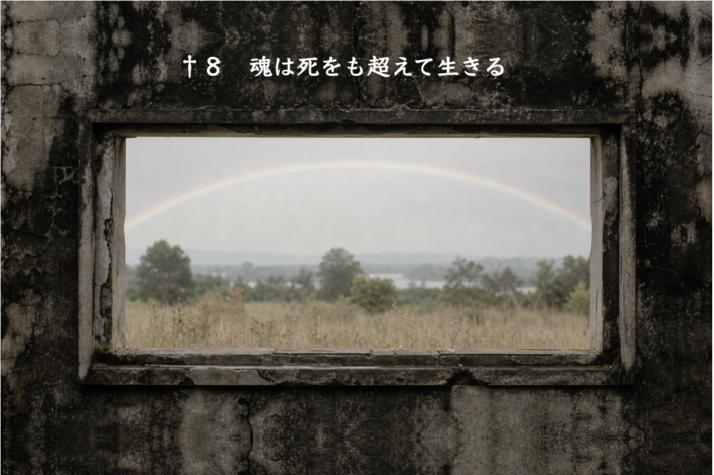
†８
体の不調、心の苦しみ、人間関係の悩み、仕事の停滞、お金の問題、現実の困難。
これらは一見、別々の問題に見える。
しかし、深く見ると奥底には同じ一つの源がある。
それは、「自己」と「現実」の不調和なのだ。
第一章の比喩で言えば、ボールと凹みが噛み合っていないということだ。
多くの人は、問題を別々に処理しようとする。しかし膨大な努力にもかかわらず問題は止むことなく、形を様々に変えながら表れ続け、悩まされる。
このことから分かるのは、下流の現象を見るのも大事だが、それを繰り返してるだけでは水源の状況は変わらないということだ。
水源にある問題とは、魂はこの人生において居心地良くしているか、花開いているかということだ。
魂が快適な状況である時、現実もまた快適な様相を示す。それは必然の反映なのだ。
「外側（現実）の問題」と「内側（魂）の問題」はどのように対応しあっているのだろう。
私たちには、現実と自己という「魂の二枚の鏡」が与えられている。
現実の問題は、魂の問いを曇りなく映し出している。
どうしていつも他人に良いように利用されるのだろうか？
それはあなたが自分の平安を守る心の技術をまだ学習していないからだ。
学んだ時、あなたを良いように使う人はあなたの前からいなくなる。
依存してくる人、嫌味を言ってくる人、自分を悪く言う人、罪悪感で縛り付けようとしてくる人。
現われ方は変わっても、現象の法則は変わらない。
その人が問題なのではない。
その人は、内的な問題を見るための鏡に過ぎない。
魂はいつも、「問題の根本を見よう」と私たちに促している。問題や災難や迷惑は出鱈目に起きているのではなく、はっきりと教育的な方向性を示している。
魂という言葉の定義は曖昧だ。色々な人が色々なことを言っている。霊的、宗教的、または心理学的、脳科学的に、いかようにも捉えることが出来る。
ここで改めて魂を私なりに明確に定義してみたいと思う。
私たちは心については比較的よく知っている。それは様々な想念や感情が沸き起こる、または流れ込んでくる場だと言える。他人との比較、損得勘定、怒りや欲望、そして恐れが心に生じる。
また心という場には世界観の限界がある。「こんなことはできるはずがない」とか、「して良いはずがない」とか、「こういうことをしなければならない」とか。そしてその一つ一つに善悪や正義や優劣のラベルをつけている。これらは全て固定観念だ。
魂はこれらとは全く無縁だ。魂に固定観念はない。社会が共有する価値観に対して一切の関心と遠慮がない。まだ世慣れしない子供のようなものだと思えば分かりやすい。子供には始め、恥ずべきことも、守るべきプライドもない（先程は、エゴにとって魂は親のようなものだと言った。今度は子供のようなものだと言われて、混乱するかもしれないが、その混乱は正しい。魂は左脳的理解、二元論的区別を超えた実在だ。光を当てる角度によって、無我の子供とも、老賢者とも、男性とも女性とも、機械とも獣とも映る。それでいて目まぐるしく変幻自在するわけではなく、同時的にこれらすべてなのだ。私たちの視点によって、見え方が変わる）。
魂には、感情もない。魂はエネルギーそのものなのだ。
魂の震えを確かに私たちは大きな感情として体験する。しかしそれは魂の振動や活力を、私たちが感情というフィルターを通してプロセスしているに過ぎない。
魂が活発な時、楽しい、嬉しい、ありがたい、大丈夫、という感情や想念が湧いてくる。
魂が不活性の時、嫌だ、辛い、無理だ、どうせ、という感情や想念が湧いてくる。
しかしそれはあくまでも私たちがそのように捉えているというだけの話であって、魂の状態は、簡単に言えば、生き生きしているか萎えているか、この二つしかない。
心は、文字通りの意味で魂のプロセッサーであり、その解析と伝達の精度如何によって、魂の声を聞こえなくさせる遮蔽物にもなり得るし、逆に魂の声を伝える媒介物にもなり得る。
魂と心の親和性の程度によって、心が生み出す人生態度や思考や感情の色調は、全く異なるものになる。私たちは可能な限り常に、これは魂から上がってきた感情か、それともエゴが描き出している感情かということを識別しようと努める必要がある。この分別ができない限り、私たちは目まぐるしく揺れ動く感情の奴隷だ。
多くの人にとって、魂は心からとても遠いところにある。なぜかというと、そのように日々チューニングされているからだ。魂ではなくエゴに由来する言葉や関係や制度や業務や刺激に触れ、そこから一時でも距離を取り、内面と向き合う時間を確保していない。それで魂の望みや状態が分からなくなっている。
これが、自分にとっての「ありのまま」が何なのか分からない、という話に繋がる。
その心の常態によって、「こんな自分ではいけない」と言って、魂がとっくに手を引いている状況で奮闘しようとしたり、「これはなくてはならない」と言って、魂が興味の欠片も示さない対象物に向かって猛進したりする。
一方、心が魂の性質に限りなく同化している人は、惰性の習慣や、世間の常識や、近視眼的な損得勘定に囚われることなく、魂が元気になるならそれをするし、元気を失うならそれをしない、というふうに柔軟に対応する。ある時は簡単に、ある時は非常な努力によって。
誰もが知るように、心は揺れ動く。今日思ったことと、明日思うことが違うのはざらだし、簡単に染まりやすく、突き動かされやすい。怒りやすく、のぼせ上がりやすく、怠けやすい。だから心だけを拠り所にすると人は迷う。迷いを避けるためには、心が揺れ動かないように、目標と約束で縛り付けなければならない。しかしこれも度を過ぎると心は硬直してやがて自壊してしまう。
心に反して、魂は揺れ動かない。魂は、短期的な損得や他人の思惑や感情や世間の常識には翻弄されない。魂は死をも超えて価値のあるものだけを追求している。
というのは、魂そのものが、不死だからだ。不死のものは不死のものをその糧とする。
では不死の糧とは何かと言うと、自己、愛、そして調和の実現に関わっている。
とても高尚な、抽象的な言葉に聞こえるかもしれない。これらの言葉に対する理解は全世界的に非常に未熟だ。それも無理のないことで、人間が扱える概念の究極に位置している。宗教的、精神的指導者たちの言葉を紐解けば、歴史が始まってからずっと、人類の最高水準の知性はそのことを語り続けてきた。
なぜ自己、愛、調和の実現追求は、死をも超える営みだと言えるのだろうか？
原点に立ち返ればそんなに難しい話ではないのだ。少なくとも理解すること自体は難しくない。
考えてみてほしい。明日死ぬと分かったという理由で、親は子を愛することをやめるだろうか？
否。
これが、「愛」は死を超える力を持つ、ということだ。愛は肉体の死とは無関係なのだ。
「自己」についても同様だ。明日で人生が終わりだからという理由で、自分をもう用済みのものとして他人の思惑や利益に譲り渡すことがあるだろうか？ 有り得ない。
だから自己は死によって終わらず、死の後にまで及んでいると分かる。
調和は、縁を共有するすべてのものにとって、生産的な効用が、そのすべてのものの合意と努力によって持続される状態を言う。誰もそこで傷つけることも傷つけられることもしない。それは単に本音を隠して相手を立てて、穏便に済ませることによって達成されるのではない。そういうものは単なる馴れ合い関係に過ぎない。
調和はもっと高いレベルの精神活動だ。そこにいるもの同士がそれぞれに互いの存在のかけがえのない価値や、抱えている痛みや抱いている願いを承認し、尊重することができなければならない。
愛、自己、調和。この三つを追求することは、人間存在の奥にある高次の方向性、魂の本能のようなものだ。
魂には知性がある。
私たちの普段遣いの知性とは違う。私たちにとって知性とは一種のスペックだが、魂にとっての知性は存在そのものに関わっている。
魂は、人生のすべてを、今この瞬間に見ている。そして本能的行動として、最適化を続ける。
最適化の過程は、魂によって計画されている。それは、頭で考え出す「人生設計」が、子供のままごとに見えるほど大きな力を持っている。
「魂の計画」という言葉から、魂があたかも綿密なタイムテーブルを汲んでいるかのような印象を受けるかもしれない。しかしそれは事実には程遠い。私たちの標準的な解釈は肉体的観点に縛られており、魂を理解するには適していない。
魂は、過去、現在、未来を並列的に見ている。これは当然ながら、私たちが通常の意識では持ち得ない視点だ。しかし、私たちは時間を並列的に見ることが出来ないが、空間ならば並列的に見ることが出来る。だからこれを起点に想像してみよう。
ここに三つの立体物がある。花瓶、グラス、積み木、果物、何でもいい。それをあなたは一定の空間の中に美しく並べるとする。あなたは一つだけを見るのではなく三つを並列的に見て、適切な配置を探そうとする。
一つ目を少し動かすと、全体のバランスが変わる。そこで二つ目、三つ目を合わせて調整する。一度で上手く行くかもしれないし、何度も調整し直す必要があるかもしれない。
やがて、ここだ、という収まりどころが見つかる。あなたは「良し」と思う。
今、あなたはこの作業を空間的に行った。魂はこれと同じことを時間的に行うことが出来るのだ。私たちは三次元性に制約されているが、魂はそれ以上の次元に対応している。
過去が不思議な形で現在に繋がったり、未来を準備するかのような選択を現在したりする背後には、このような営みが働いている。これが魂の知性であり、その実現過程を、直線的に進む時間の下でしか自己を体験できない私たちは、あたかも計画であったかのように直感することがある、というわけだ。
これについて私が思い出すのはヒーラーになるまでに辿った過程だ。また自分の話か、と思われるかもしれないが、そうする理由はすでにお断りしておいた。
私は漫然と十代を過ごしていたが、ある日唐突に、自分がいずれは社会人にならなければならないことを悟った。その時の強烈な違和感と拒絶感は言いようもないほどだった。自分にはそうすることが絶対にできない、ということが、何一つ試すこともないまま確信された。それは、私が27歳になったらヒーラーになることを、魂がすでに確定していたからだと思う。大学を卒業しても就職しようとしなかったことはすでに述べた通りだが、その原点にその日の強い感慨があった。
過去のある日に何事かを思ったから、その延長線上に未来が続いたとは私には思えない。そうではなく、未来がそのように決まっていたから、それよりも過去に当たるある日に布石が置かれた、と解釈する方が私には余程しっくり来る。魂は時間を並列して、その連続性を調整する。
「あれがあったからこうなったのだ」という説明と、「こうなるためにあれがあったのだ」という説明はどちらも成り立つ。しかし両者の間には時間に対する認識に関して大きな違いがある。前者は偶然の積み重ねが結果を作るという考えだが、後者は結果のために必然が積み重ねられたという考えだ。前者の考えは人生の不思議を理解するには不十分だと私は思う。
なぜ後者の考えは単なる思い込みだとかオカルト的だと即断されてしまうのだろうか？ それは私たちが、自分自身の時間認識が三次元性によって制限されていることを自覚せず、愚かにも私たちの目に見える世界が全てだと思い違えているからだけの理由だと思う。
魂の知性は人生全体に対する俯瞰と洞察を絶えず行い、現在を調整している。日々の損得勘定や感情の起伏に左右されることなく、全貌を見ている。
私は先程それを「通常の意識では持ち得ない視点」だと言った。しかしだからと言ってこれが決定的に私たちの知覚にとって隔絶されているわけではない。忙しない日常生活の中でも、ふと心を静めた時に現れるし、または人生の窮地でそれまでの固定観念が通用しなくなった時にも現れる。自覚的にその状態に入ることを望むのならば、瞑想をするのが望ましい。それはいつでも声を発する準備が整っている。
臨死体験は、魂の視点を示す劇的な好例だ。死に近づいた人が、損得、執着、怒り、世間的成功を超えて、人生全体を俯瞰し、直感的に理屈を超えて、愛、感謝、または後悔の念に打たれることが、数限りなく報告されている。その時、過去と現在と未来は単に一つの時間の三つの断面に過ぎなかったことを知る。これは、死の扉が開くまで、私たちがどれほど存在の本質から離れているかということを示す話でもある。
しかしこれを裏返して言うならば、その洞察を、私たちは死の寸前まで先延ばしする必要はない。むしろ、早い内に不完全にでも気付いてしまったほうがいい。そうまで行かなくても、死を思わずに生きている内に抱く諸々の想念や感情が絶対的なものではない可能性について考えてみるといい。
古代ローマの哲学者セネカはこう書いた。
「生きる事は生涯をかけて学ぶべきことである。そしておそらくそれ以上に、不思議に思われるであろうが、生涯をかけて学ぶべきは死ぬことである」
死の門口に立たずとも、魂はずっと声を発している。だから魂の問題は、私たちが聞き取ることが出来るかどうかだけにかかっている。その声は少しも秘匿されていない。関係者以外立入禁止でもない。誰にでも開かれているが、ほとんどの人はそれを無視して取り合わない。
多くの場合、魂の声は現実に対する違和感として私たちの心に上ってくる。しっくり来ない、苛々する、虚しいといった感情や、合わない服を着ているような居心地の悪さによって、私たちは魂の声に日常的に触れている。もちろん、喜びや感謝や賛美といった感情によっても魂は声を伝えている。
ただしここには注意が必要だ。私たちは、エゴの喜びと魂の喜び、エゴの満足と魂の満足を、正確に見分けることができるだろうか。例えば愛の喜びがあるが、それは自分が誰かを所有できる喜びなのか、依存し依存される喜びなのか、それとも相手がただ存在することが喜びなのか（愛については第二部の最後に詳述する）。
これが真の喜びだとどうしたら認識することが出来るだろうか。
実はそのためにこそ、魂は私たちに喪失や挫折を体験させる。魂は「それでもなお残る恵み」に私たちを気付かせようとする。
そのような恵みを喜ぶことが出来た時、私たちの心は魂と親和している。同じ目で人生を見ている。
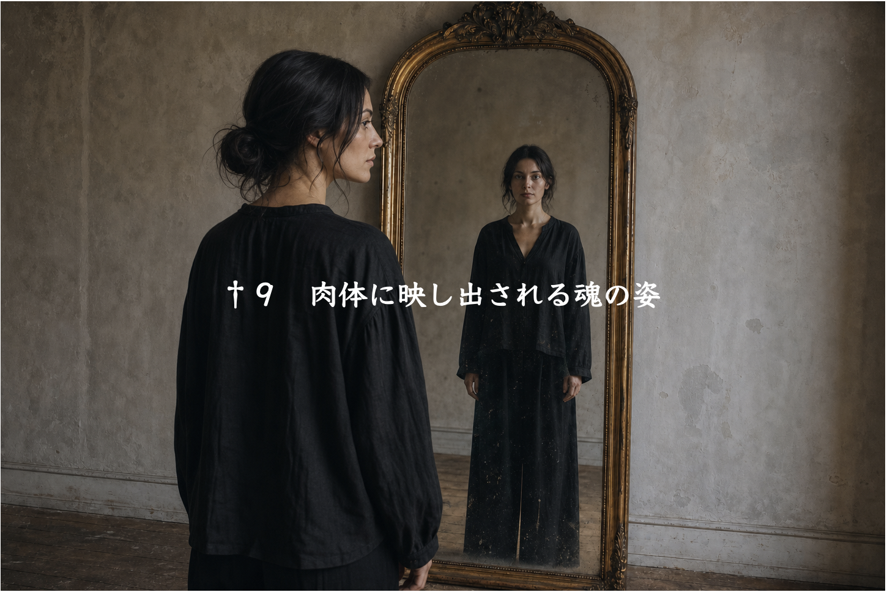
†９
私たちが当たり前のものとしている体についても、魂との関係において構造的に学び直してみよう。
魂の状態や力や声は、心に響く。そして心と体は、密接に結びついているので、心の状態はかなり正確に体に映写される。心身相関ということだ。
魂の活力は心の活力として伝達され、それが最終的に体の活力へと変換される。だから心という鏡を一枚挟んではいるが、体もまた魂の鏡なのだ。
こうして、体には、その人の魂の状態が表れ出る。どうしても治らない症状や長引く不調は、魂の不活性に原因を持っている。
また、すでに述べたように、魂の不活性はもう一つの鏡である現実を通して表現されてもいる。
だからヒーリングを長年してきた経験から言うと、その人の身体的症状や不調が、その人自身の人生や心の状態と全く無関係に独立している、という例はほとんどない。例外があるとしたら、それは純粋に物理的な原因だけを持つ場合だと考えて良い。例えば不摂生をして胃腸を痛めるというのは、それ以上でも以下でもない話であって、これを人生や魂の話にまで広げても話をややこしくするだけだ。
普通は、少し話を聞いて人柄に触れ、症状を聞けば、そこには確かに辻褄というものがあり、「まあそういうことになるでしょう」と多くの場合、私は思うし、そのために、症状について何も聞いていなくても正しく言い当てることが出来る。
これは超能力以前の、もっと素朴な何かだと私は思う。だから読者におかれても、「オジジには出来るだろうが私には出来るはずがない」などと言わずに、考え方を取り入れてほしいと思う。
というのも、私が言うようなことは古来、人が言い習わしてきたのだ。例えば「肩の荷が重い」とか「溜飲が下がる」とか「腹に一物ある」とか「脚を引っ張られる」とか「頭が痛い話」とか言う。
事実、その通りなのだ。魂の状態と体の状態が繋がっていることは大昔から常識だった。
腹に一物あれば便秘もする。
背負い込みすぎれば肩凝りにもなる。
言いたいことも言えなければ喉の調子が悪くなる。
そういうふうに見れば、確かにそういうふうになっている。
あとは、そういうふうに見ることを、諺にない部分にも広げていけばいい。そうすると東洋医学があらかた説明し尽くしていることが分かる。五臓とそれに対応する症状と気質の関係性は、経験的に確認されている。
私はクライアントの話を聞き、態度や様子を見て気質を察し、症状との関連性と照合する。するとそこには確かにリンクがある。人格、態度、症状をばらばらに見ていると、いつまでも全体像が見えない。
もっとも何事も教条主義は禁物だ。先ほども述べたように、食生活が荒れていれば腸内の状態は悪くなるのは当然なので、こういうものは取り除くべきノイズ情報として切り分けなくてはならない。遺伝や加齢や過労やその他の要因も除外する。生活が物質的なレベルで不健全、あるいは制限の下にある人はまずその段階をクリア、または黙認しないといけないが、その後の段階では、こう言うことが出来る。
「その体の症状を通して、心の状態と魂の目指すべき方向性を知ることが出来る」と。
体は大切だが、それにばかり固執するのは良くない。自然食品やヨガもいいが、それ自体が単独で全体に対して与える影響は驚くほど小さい。心が魂の鏡として綺麗になれば、放っておいても体は綺麗になるし、健康にもなる。形から入ることには限界があるということだ。
体だけ大事にしても魂は磨かれない。
しかし魂を大事にすれば体は自然と磨かれる。
肉体的健康に厳重に配慮していて、そしてぎすぎすしている人がいる。これは誤りの典型例だ。自分の健康を守ろうとするあまり、それを害すると言われるあらゆるものを敵視する。その膨大な自衛の努力にもかかわらず健康そうにはまったく見えない。
一方、大らかな人は多少の毒物も程々に受け入れ、しかし極端な玄米菜食主義の人よりもはるかに健康で肌艶も良い。
物質的な安全よりも精神的な余裕の方を重視した方が、全体は上手く回る。物質的健全性は精神的健全性を必ずしも担保しないが、精神的健全性は物質的健全性の大きな下支えになる。
心と体では、全体に対して与える影響の程度が全く異なる。人類文明はおしなべて物質側から物事を考えることを習い性にしているが、それは木を見て森を見ず、というものだ。
体は魂の鏡だが、多くの人にとってその「鏡」は曇っている。物理的には化学物質や持続的な帯電状態、精神的には固定観念が作り出す思考のノイズがその原因となっていることが多い。これはすぐ後で説明するが、ヒーリングの際にエネルギーの様子を見ると分かることだ。
ノイズを綺麗に除去しないと、魂の姿は表れてこない。ノイズとは私たちにお馴染みの全ての無用の想念であり、幼少期から蓄積された緊張や恐れのパターン、防衛本能、怒りや我慢や諦めの回路に根を持つ。それは脳内の化学反応の慣性であり、使い慣れたニューロンネットワークの「通常営業」。そして私たちが感じ取る内的状況や変化は、ドーパミンやアドレナリンといった脳内物質に絶えず左右されている。
重要なことに、内部的な反応のパターンは必ずしも外部的な現実と合致していない。それどころかまるで見当違いな反応パターンを不毛に繰り返すことすら多くある。しかし私たちにとって主観的にとてもリアリティがあるので、手放すことが難しい。これがストレスの基本的な説明となる。
例えばある人が状況に対してストレスを覚えており、頭の中でぐちぐち言っているとする。その根拠は必ず過去にある。過去を参照して現実を評価しているのだ。
「いつもこれだ」
「あの人はまたこれをした」
それを遡ると、冒頭で私自身の幼稚園時代の体験を話したように、子供時代に行き着く。これが内的な反応のパターン、遠い昔に形成されたニューロンネットワークの通常営業だ。
今や人生は様相を変えており、子供の頃にはいなかった登場人物が多く存在している。人生初期の世界認識のフレームにこれらの人はいなかった。だから正しくこの人たちを認識レベルに引き上げることが出来ない。その存在と、発せられる言葉を真に受けることが出来ない。あるいは、既知のキャラクター設定の中にはめ込んでしまう。
私の場合、子供時代に色々な場面で体験した嘲笑や侮蔑、抑圧や無関心などによる心理的体験が、私自身のこの世界における価値、私が出会える人の縁、そして聞こえてくる言葉の「型」を定着させてしまったので、ヒーラーになってから多くの人に感謝され信頼され、また、単に仕事上の関係には到底収まらないほどの愛情と配慮を受けてもなお、それを事実そのままに受け止めることが出来なかった。新しい現実を収めるためのフレームを持ち合わせていなかったからだ。私は顧みられないはずの存在、輝いてはいけないはずの存在だった。結果、かけられる温かい言葉や思いやりは私の中をすり抜けていった。
かなりの時間をかけてようやく、「自分はこんなふうに人から接してもらえる人間なのだ」「人生は変わったのだ」と、世界認識、自己認識のフレームを書き換えていく、または新設していくことができた。私に向けられた全ての温かい言葉が私の認識を改めてくれた。
このことから分かるように、ストレスは、現実に対する自分自身の否定的反応によって起こる。つまり、見掛けとは裏腹に、実は状況が問題なのではなく、受け止め方が問題なのだ。同じ状況でも文句の出ない人はいる。夏は誰にとっても暑いが、そのことで文句を垂れる人もいれば、それをしない人もいる。
では文句が出そうになったら押し留めれば良いのかと言ったら、それもそうだがもっと大事なことがある。
それは、ストレスは、今この瞬間、新たに生じたのではなく、過去の持続として生じているという事実を知ること、自分は純粋な「今」という時に反応しているのではなく、過去に纏った鏡の曇りを見ているのだという事実を知ることだ。
先程の話に続けると、ある時期から後の私は恵まれていたが、「恵まれていない自分」というフレームが固着していたために、恒常的なストレスに晒されていた。夏はとっくに過ぎたのに、「夏は暑いから好きじゃないんだ」と冬になってもまだ顔をしかめている人のように。明らかにそのストレスは、私自身が作り出していた。
毎朝生まれ変わって目覚めれば良いが、私たちは昨日の世界を引きずって目を覚ます。「今日起きていること」を、純粋に「今日の目」で見ていないのだ。
このように過去に根を持ち、現在の体験を覆い尽くしているものが、この文脈で言うノイズだ。
ノイズに関して、ヒーラーの目に、人体がどのように映っているかということについてお話しよう。これは読者が自身の体の状態を推量するにも良い助けになると思う。
ヒーリングをする際には「遠隔視」ということをする。これはエネルギーの様相を見る、ということだ。本書冒頭で私は頚椎２番を軸として見ることが好きだと書いた。頚椎２番は精神的な緊張や不調和を描き出し易い身体の箇所だ。それは瞬発的にも長期的にも現れる。つい今しがた受けた心無い言葉や新たに発生した現実状況の困難は、即座に頚椎２番の緊張として反映されるし、自己抑圧的なその人の長期持続的な精神的態度は、固着した緊張の様相として表現される。
人体構造的に、頚椎２番の歪みは脊椎の全てに及ぶので（他の脊椎も同様だが、頚椎２番の影響は特に大きい）、頚椎２番を正常化すると、その影響下にある歪みは自動的に解消または緩和される。オセロの劇的な一手のように、広範囲にわたって好転を引き起こすことができる。
だいたい誰の体を見ていても、頚椎２番は歪んでいるか、あるいはそこにエネルギーの滞留が生じている。これは人類の持病のようなものだ。動物たちは人格否定をされることがないし、自己否定することもない。人間だけがそれをする。それによって苦しむ。
できることならすべての人の頚椎２番を定期的に正常化してあげたい。そうすれば、こんなものだと決めつけてきた肉体が、驚くほどの自己治癒能力を発現することを多くの人が実感することができるだろう。運動神経も、内臓の活動も、頭脳の明晰さも、頚椎２番の影響を免れない。
頚椎２番の緊張が強い人は概して自己否定が強い。そして人間関係、健康、仕事の効率、感情問題など、様々な領域で解決困難な苦しみを抱えている傾向にある。自己否定の内には「こんなことをして許されるだろうか」「恥ずかしくてそんなことはできない」「自分は気分を優先してはならない」などの考えが含まれる。これがあまりにも強度だと、奥ゆかしさや慎重さを超えて、病的な様相を帯びてくる。
また頚椎２番の強い緊張が発する波動は人間関係に摩擦を必ず作り出す。簡単に言えば、思ったことを、それなりの自制や配慮はした上での話だが、素直に言動に移すことができる人は、頚椎２番が健全な状態を保っている。
どうして頚椎２番にそのような強い緊張が常駐しているのかというと、その始まりは必ず、幼少期に親から受けた体験がある。冷遇されたり虐待されたり、過度の禁止や奨励を受け続けた経験が、その人の頚椎２番を、早くも子供時代に、歪ませることになったのだ。だから頚椎２番の正常化というのは単なる姿勢改善とか健康回復以上の意義を持っている。頚椎２番の正常化は、その人の人格肯定、存在肯定と必ず連動して進む。
すべての問題が頚椎２番に必ず関わっているというわけではない。複数の扉を開く親鍵として筆頭に上がりやすいというだけのことだ。体のあらゆる箇所に、問題とその解決のための鍵がある。しかし、だからと言って、私は高感度センサーのように全身を隈無く検分するわけでもない。私が遠隔視によって見るものは、その人の体自身が示して見せるものに限られる。
体そのものに知性があるのだ。そこで必然的に、私には見えるものと見えないものが生じる。体が示さないものを私は見ることができない。
例えばある人が特定の箇所に関して主訴を持っている。私にはそれがはっきりと、言われる前から見える時と、どう頑張っても見えない時がある。前者の場合、体は、その箇所が問題であることを認め、ヒーラーに見える形で表現している。後者の場合、体は、その箇所を問題だと認知していない。だから解決を求めて示すことをしない。
なぜその人自身がその箇所が痛いとか不調だと感じているのに、体がそれに反して沈黙するということが起き得るのだろうか。それは体が、その箇所の痛みや不調を「今は問題にする必要がないもの」または「解決できないもの」などと見做しているからだ。
例えばある人は膝が痛いという。当然、その人は膝が問題だと思い、その改善を願う。しかし体は別の見解を持っている。例えば、そもそも頚椎２番が問題なのだ、と考えている。その箇所の歪みが脊椎全体にわたって歪みを作り出し、重心が左右いずれかに偏っているとしよう。その皺寄せが、片方の膝に出ている。構造的に見て、膝だけを治すということは不可能だということは、体にとって自明だ。だから膝を治したいとは思わず、遠隔視で見えるように問題箇所として膝を示すこともない。
このように、体は厳密な論理の上に成り立っている。対症療法が良くない理由は、この論理を無視し、順序を転倒させて目先の成果を追求するからだ。その結果、全体のバランスは場当たり的対処の積み重ねによって複雑化してしまう。
更に話を深いレベルに進めよう。遠隔視をすると、頚椎２番であれ何であれ、体が問題と認識している箇所を見て取れる。一方、それと同じくらい、「何も見えない」という場合がある。これは、肉体という鏡に埃や油汚れが堆積しているようなもので、そのために、そこに何が描かれているのかを見て取ることができない。そこで多くの場合、ヒーリングはまずそのノイズを除去することになる。それによって、その下に隠されていた問題を見ることができるようになる。それは、体がようやく言葉を発することができるようになった、ということなのだ。
それに連動して起きることは、その人自身にとっての体感の変化だ。いわゆる好転反応と呼ばれるもので、その人は気付かなかったが、実は体が疲れていた、苦しかった、眠りを必要としていた、などの「声」が肉体から上がってくる。
こうしてまずは体のありのままの状態が示され、一時的に疲労や不調を体験し、そうすることでそれが排出や処理されることで、浄化される。これは症状を「抑え込む」とか「鎮める」という手法とは正反対にあるものだ。内に蓄積している疲労や毒素は排出されて初めて解消されたと言える。押し込めても次の噴出や漏洩までの時間稼ぎをすることしかできない。どちらの方が理に適っているかということは問うまでもないだろう。
多くの人の肉体は、ノイズによって魂の自然なエネルギー放射を妨げられ、五里霧中の状態に陥っている。多くの不調や病気はこのような状態と関連している。体は自らを治したい癒したいと願っているが、曇らされているために、その力を発揮することができない。人は体に目隠しをしたままにしておいて、病気というのは仕方のないものだと決めつけている。
私たちの目には見えないが、魂の発するエネルギーの波形というものが確かにある。波形というものはどんなものであれ、本来自然の形では、必ず美しい。それが肉体上に漏れなく曇りなく描かれることが大切なのだ。単なる外見的造作や遺伝形質ではなく、魂が輝いている、人生を全うしている、と見える人が、なぜ容貌においても美しく、若々しく見えるのか考えてみてほしい。肉体は魂を映し出しているのだ。
私たちは魂を核として、言うなれば肉体を纏って生きる。肉体を通して人と関わり、肉体を通して働き、肉体を通して喜ぶ。肉体を無視して魂だけを輝かせるということはできない。魂の波形が肉体にまで顕現することによって、その人は本当の意味で、「魂で生きている」と言える。そしてそれは単なる抽象的な話ではなく、実際的な能力や運や容貌に必ず現れるのだ。というのは魂にはそれだけのエネルギーが内包されているからだ。私たちがもし無力感を感じているとしたら、それは決して、魂が無能力だからではない。魂の万能に近いエネルギーを、肉体という界面で大幅に弱めてしまっていることにこそ原因がある。
だから肉体が魂の波形と同調することは最適化に欠かせない。いまいち脈絡を失っているように見える人生を生きている人は、肉体と魂の親和性が低い。その人の健康はあまり芳しくなく、疲れやすかったり、不調に陥りやすい。
だから繰り返すが、肉体のヒーリングをするということには単に体調を維持するとか症状を解消するという以上の意味がある。ヒーリングが人生を整えると言ったらそれは誇大広告だ。しかしヒーリングによって整えられた肉体が魂の発現をそれまで以上に可能にし、それによって人生が整う。
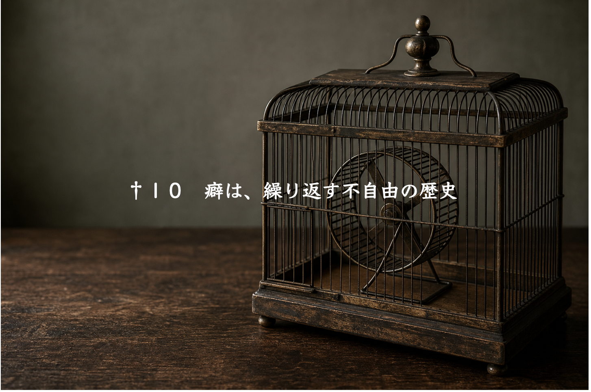
†１０
魂の様相が体に現れると話したが、それは症状に限った話ではない。体の上に現れ、また体の行う全てのことが、魂を映し出している。行動パターンや癖、つまり、仕草、声、表情、呼吸、目線、態度、その全てに本人がまだ自覚できていない人生の構造が表現されている。
一般的に癖は全く問題視されていないように思われるが、無自覚の癖が野放しにされていることは実は人生の最重要の問題だ。だから他のどんなことよりも、癖直しこそ一番の課題にされるべきだ。それが最も効率が良い。癖が多ければ人生が波乱に満ちる。それは必然の結果なのだ。
どういうことなのか見てみよう。
癖は固定観念の目印なのだ。癖に対する無自覚は、自分自身の固定観念に対する無知を意味する。固定観念こそは私たちの魂の実現を阻んでいる元凶なのだから、これは捨て置けない。固定観念が癖を作り、癖が人生を難しくしている。なぜなら癖は現実状況に対する反応の固定的なパターンであり、反応が固定的であれば現実状況も固定的なものになる。あなたがこれこれの寸法の立方体の箱を持っていれば、そこに入る水は必ず同じ立方体になる。
これは当然の理屈ではないだろうか？
ではその癖はどこから来たのか。どのようにして形成されたのか。
癖の発生とその理由は必ず一対一の対応をしている。理由もない癖などというものは一つもない。
なぜ愛想笑いをするのか？
なぜ喋りながら唇や顎を触るのか？
なぜ頷く時、一度ではなく必ず二度なのか？
立ち止まって自分自身の癖とその動機について考えたことがあるだろうか。
愛想笑いをするのは、「相手の気分を良く保つことは自分の責任だ」という考えがあるからだ（鵜呑みして読み飛ばさず、確かにと思えるまで深く考えてみてほしい。その癖を持っている人と持っていない人の間に、あなたはどんな違いを発見するだろうか）。
喋りながら唇や顎を触るのは、「自分は思うように言葉を発してはいけない」と思っているからだ（これについてもよく考えてほしい）。
必ず二度頷くのは、「私はあなたの話をこんなによく聞いています、といつも伝えなくてはならない」「自分はぼんやりしていてはいけない」という強迫感を抱えているからだ。
このように癖には必ず心理的背景がある。
そうでなければ、わざわざそんなことをしはしない。必要性がないからだ。
ではいつその心理的背景は固着したのだろうか？
それは子供の頃にまで遡る。育った家庭環境の下で、望まれたまたは強いられた行動や反応の仕方が繰り返される内にパターンになり、やがて外そうにも外せない自己の振る舞いの一部になった。
癖は、遠い日の不自由をその歴史としている。
その不自由の歴史が、現在を作っている。だから私はコーチングの場で癖直しを促す。それは不自由の歴史を書き直すための試みなのだ。言うまでもなく、「人から好かれるマナー」などではない。
癖はなければないほど良い。人生の苦しみに喘いでいる人ほど癖が多い。
顔をしかめながらでないと、問題や厄介について話せない人がいる。その人が難しい顔をやめて涼しい顔で話せるようになった時、問題は半ば解消されている。
まるで会話するつもりなどさらさらないかのように、自分の悩みを休みなく話し続ける人がいる。早口をやめて、呼吸を感じながら話せるようになった時、その人は、悩みを離れたところから見えるようになる。
大して面白い話をしているわけでもないのに、なぜか発言が終わるたびにほほえむ人がいる。愛想笑いをやめることが出来た時、その人は、他人に調子を合わせる生き方から一歩外に出る。
たったそれだけのことで自分が変わり、それに合わせて現実が変わる。
あるクライアントは、文字通り息つく暇もなく悩み事について喋り始めた。悩み事は際限がなかった。いつまで聞いても話し終わらないと思ったので、私は途中で遮って、充分に呼吸をしながら話すように促した。
その人は努力した。すると頭の中から悩み事が消え去っていること、解決すべき問題はそもそも存在せず、自分がそれを勝手に問題に仕立て上げていたことに気付いた。このことから分かるのは、その人が問題としていたことは、実は、問題がそれ自体として独立して存在していたのではなく、忙しない脳が投影した景色のようなものに過ぎなかったということだ。そうでなければ、脳の過剰な回転を少し遅らせただけで問題が消えたかのように洞察されたわけがない。
このようなことは非常に多く見られる。問題それ自体は大したものではないのに、自分自身がそれを大きな悩み事にふくらませてしまっている。あるいは本来自分が関わるべき問題ではないのに、好き好んで首を突っ込んでいる。さながら自分が回している車輪の中で必死に走るハムスターのように、止まることが出来ず、問題に意識を集中させればさせるほど、脳内のスピンが早くなり、息もつけない内的状況に嵌まり込む。
この人の場合、立て板に水のようにまくし立てて話す癖に能動的に注意を向け、その癖こそが問題を作り出しているのだと心から分かって初めて、その問題を解決することができる、あるいはその問題から抜け出す方策を得ることができる。逆に、その癖を維持している限り、自分自身が問題を作り出し続けるわけだから、永久に問題が解決することはないのだ。
私たちの悩みの多くは人間関係に関わる。人間関係の問題は、自分の癖を取り除いていくことによってのみ本質的な解決を見る。
苦手な人が配置されているのは不慮の災難ではない。凹凸のように必然的に噛み合っているだけなのだ。
ある人は自分をいつも二の次にする。自分の気分を優先してはいけないと強く思い込んでいる。必然的に、人間関係において二の次にされる待遇を受け、他人からまったく配慮されない。本人はそれを嫌がるが、種を蒔いているのは自分なのだ。
なぜ自分を優先できないのか？ そうすることに罪悪感を持つように、自分自身の心を形作ってきたからだ。
ある人はいつも他人に調子を合わせる。そうしないと落ち着かない。結果、調子を合わせることを強いられる環境に置かれる。本人はそれに疲れているが、やはりまた種を蒔いているのは自分だ。
なぜそのような演技をしてしまうのか？ そうしないと罪悪感を持つように、自分自身の心を形作ってきたからだ。
自分が凹だから相手は凸なのだ。
だから自分を変えれば配置が変わる。これは必然の道理だ。
魂が映し出す現実の困難は、絶対に回答不能な謎かけではない。
それは魂からの修正の要請であり、対象の癖が何であるかということは現実状況によって明示されている。それを受けて正しく対応すれば必ず形を変える。
この方法の有効性を知った人は、自分の小さな癖を変えないままに、現実や他人に対して不満や愚痴を言うことにもはや意義を見出さなくなることだろう。
癖直しの実践法をお伝えしよう。簡単ではないことは、先に断っておく。
まず癖というものは多くの人にとって盲点だ。ある人が、私の癖直しの話を一通り聞いた後、「ところで自分の癖が分からない」と言った。正直に言って、私は少し面食らった。というのはその人の話し方は癖の塊のようなものだったからだ。私はその人の癖を、最も分かりやすい箇所に限って指摘した。それでもその癖を封じて話すことに、その人はなかなか成功しなかった。
癖直しの理屈と方法、そして効用は明確だが、そう簡単には達成できないことは心に留めておいてもらう必要がある。気長に取り組まなくてはならない。
１
まずは自分自身のなり得る限りのフラットな状態を知ることから始めよう。多くの人は常時緊張している。そこで睡眠前などのリラックスした時間に、全身を緩めるということをする。特別な体操などは要らない。呼吸による胸の上下を感じ、ただ緩むままにすれば良い。人によっては、緩むことがどれほど難しいかその時点で気付くこともあるだろう。上手く行かなくても構わないので毎日続けることが重要だ。
この時重要なのは呼吸だ。呼吸に伴う胸の上下、横隔膜の動きを感じようとする。深く吸うとか深く吐くということを考えてはいけない。他人事のように、こんなふうに私の体は呼吸しているのか、と観察するに留める。すると自然な形で呼吸が深まっていく。これを私は「真呼吸」と呼んでいる。
特に表情筋を緩める必要がある。表情筋が緩めば全身が緩む。逆に言えば、全身を緩めても表情筋が硬いままだと、何もしなかったも同然というほど効果がない。
自分は死体になったと思って、全ての筋肉を脱落させる。こうして自分が出来得る限りの最も緩んだ状態に近付くのが第一歩目だ。
２
次に、日中の活動時間に、短い時間を取って同じように緩む。電車の中、トイレ、待ち時間、いつでも良い。こうすることで、そうでなければ張り詰めたまま過ごしてしまう一日に何度か緩んだ状態を取り入れることが出来る。
可能ならば、その緩んだ状態を７割ほどでいいので維持したまま、元の動作や仕事に戻る。
次第に、緩んだ体と心の使い方に習熟していくことができるようになる。
３
それが出来るようになったら、簡単な対人の場面で実践応用を始める。人と対面している時に、緩んだ状態に近付く努力をする。習い性によって、口角を上げていないか、目を大きく見開いていないか、顎に力を入れていないか、唇を尖らせていないか、呼吸を浅くしていないか、無駄に手足を動かしていないか、観察し、可能ならば抑止する。
すぐに出来なくても良いので、後になって振り返り、評価する。
あなたが緩んだ状態でいることで、必ず相手の反応は変わる。
それを確認することも大切だ。
４
自分を知ることはとても難しいことなので、人に意見を求めるのが良い。あなたをよく知る人は、あなたの癖にも気付いている可能性がある。他人の癖をよく観察し、参照するのも良い方法だ。ここで特に注意したいのは、正当化してはいけない、ということだ。「え。でも私はそんなつもりはないけど」などと言って、その癖を不問にしても始まらない。癖があることが問題なので、そこに解釈を挟んではいけない。
自分で分からず、人に訊いても明確な答えを得られず、またはどの癖が今現在の問題の種になっているのか明らかでない場合は、私に尋ねるのも良いだろう。
５
簡単な場面で癖の封じが出来たら、それよりもやや難しい対人場面で試みる。
最終的には、最も緊張を強いる、最も自然体でいることが難しい人の前でも、フラットな自分でいられることを目標にする。
いついかなる時も、自分が意図した以外の理由によって、声が高くなったり早くなったりしないようにする。呼吸を常に感じながら話すことは、その前提としてとても重要だ。どんな状況や人間関係もあなたの呼吸にも声にも仕草にも影響しなくなった時、人間関係であなたが劣勢に置かれることは完全に人生から消えてなくなる。
†
「真呼吸」について、付け加えて説明しよう。
なぜ深呼吸ではなく真呼吸なのか？
呼吸法とどう違うのか？
異論はあるかもしれないが、私は深呼吸と呼吸法を勧めない。なぜならそこにはONとOFFがあるからだ。
森林浴して深呼吸する。それはいい。しかし町の暮らしに戻れば再び呼吸を止めている。
呼吸法も同様だ。みっちり15分も、七つ数えて息を吐き、止めて、六つ数えながら息を吸うなどする。そして呼吸法が終わると浅い呼吸で家事をしている。
こういうことに意味はない。
平素の呼吸の浅さが、現実対応に際して自分自身に無理強いを許し、それが現実の困難を作り出している、という事実の認識が必要だ。
昔、私にはとても苦手な人がいた。その人の前では呼吸が浅くなり、無自覚の内に、普段よりも高い、速い声で自分が話していることに気付いた。相手のヒステリックな態度や言葉に振り回され、私は言いたくもないことを言ったり、感情的に過剰反応をしたりした。呼吸の重要性に気付いたきっかけだった。
それから徐々に訓練し、誰の前でも、どんな状況でもいつも呼吸を感じていられるように努力した。時には不快な状況や、緊張する場面に見舞われることもあるが、呼吸を常に感じようとすることを忘れない。
今では私を感情的に揺さぶることができる人は、私の人生には一人もいない。同時に、私はこの深い呼吸の状態から、他人の呼吸の浅さを観察することができる。その人が充分に呼吸できていない時、不用意な発言を連発したり、つまらないミスをおかしたり、思考の迷路に嵌まり込むことを見て取る。逆に、その人が呼吸を取り戻した時、精神が清明になることも同様に見て取ることができる。
呼吸を深めようとする必要はない。あえて言えば、そういう発想が、そもそも自分勝手で良くない。体は私たちにコントロールされることを望んでいない。なぜなら体は自分自身にとって最善のことは自分でできるのだから。私たちはそれを妨害している側だ。それを心得ずに、「私が体の状態を良くしよう」という発想は無知の産物だ。体は、私たちに関心を寄せられることをこそ望んでいるのだ。寄り添う気持ちが私たちに欠けていることが最大の問題なのだ。
この認識に拠るならば、パートタイムのような呼吸法に本質的な意味など何らないことが分かるだろう。平素の呼吸が深く保たれていることが、有効性の観点で重要なのだ。真呼吸にONとOFFはない。
呼吸を感じれば自然と呼吸は深まる。そういうふうにできている。深めるのではなく、深まるまで感じればいい。先走りがちな脳の活動を一時でも止め、体に歩みを合わせることが大切だ。
呼吸を感じながら行うあらゆることは自然になる。動作も、発言も、人間関係も。それはエネルギー的に無駄が少なく、美しい。
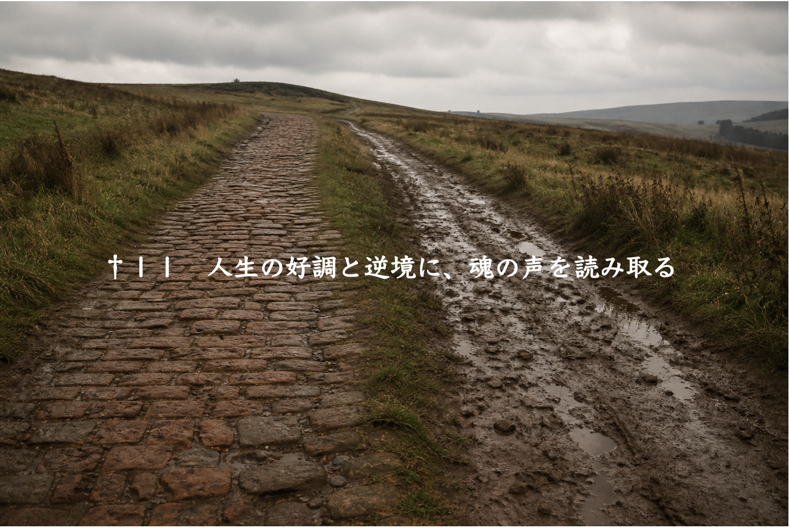
†１１
問題や軋轢は、それを通してよりフラットな自分に近付くための砥石としての機能と目的を持っている。自分を絶えず観察していると、この状況で、この人の前で、自分は反射的にこう振る舞ってしまうのだ、ということがやがて分かる。
あなたの魂は、そんなふうに無理をして状況や相手に適応することではなく、リラックスすることを、自然体に戻ることをあなたに望んでいる。
だからこそ、矛盾するようだが困難な状況や人を投げて寄越す。
自分がどんなに落ち着きなく震えているか知りなさい、と。
そうでもしなければ私たちは魂とのズレに気付くことができないから。
そして、用が済めば砥石は姿を消す。
私たちからすれば「問題があること」が問題だが、魂からすれば、「魂からズレていること」が問題なのだ。それを修正するために私たちにとっての問題が必要だから作り出している。
魂が何を考えて問題を作り出しているのか推量しようとしない限り、私たちは人生の被害者の席から動けない。
人生に起きる出来事を単なる幸不幸としてだけ見ると多くを見落としてしまう。
逆境は、ただの不運ではないし、好調もまた、ただの幸運ではない。
どちらも、魂の声を映し出す鏡なのだ。
もちろん、苦難の中にだけ魂の声が響くのではない。
好調からもまた多くを読み取ることが出来る。好調は魂が良い調子であることを示している。「このまま行こう」と私たちに伝えている。
だから私たちには複眼的な視点が必要だ。ある部分で好調だから全部が良いのではないし、ある部分が苦境だから全部が悪いのではない。魂は多面的な様相を示している。
私がプロの音楽家たちと共演した話には、もう一つの裏話がある。
私は華々しい演奏の晴れ舞台に招かれたが、同時期に、実生活の困難な局面に直面していた。一方はあり得ないほどの幸運で、他方はあり得ないほどの苦しみで、その重さは主観的に同等だった。二重の現実によって私は引き裂かれる思いだった。
片方の現実を見ると、お先真っ暗としか思えなかった。ヒーラーという道を選んだことを始めとして、過去の選択の何もかもを、自分は間違えたのだと思った。もう片方の現実は、真っ向からそれに反していた。（その金欠の魔境において極めて象徴的なことに）純金のフルートを奏でる人々に私は囲まれていた。相反する二つの現実は、私自身の内なる相反する性質またはエネルギーの明らかな反映だと思われた。
私が呆れられるのを承知で話した高額のコートは、この状況で現れた。
私はその時こう判断した。
「今自分にはとても良いことと悪いことが二つ同時に起きている。そしてこのコートはプラスの側の文脈で提示されているのだ」と。
だから私は購入の決心をする時に、マイナスの文脈をそこに混ぜ込まなかった。「お金がないのにこんなものを買ってしまってどうするんだ」という発想を捨て去り、代わりに、「このコートこそは、純金のフルートに釣り合うではないか。そんな場に立つ、新しい私に」と受け止めた。なぜならそれが、エゴによる抑止が追いかけて来る前の、純粋な直感だったからだ。こうしてプラスの文脈に正しく接続した。
中心から全てが周辺に向かって同じ波形で展開されている、と私はこれまでに何度か述べてきた。だからこのエピソードは読者を混乱させるかもしれない。「全く相反する二つの流れが起きるということであれば、これまでの論理は何だったのか」と。これについてどこまで綿密に読者が把握したいか分からないし、私も上手に説明できるか分からないが、試みる。
例えば私は絵を描き、音楽をし、料理をし、ヒーリングをし、文章を書く。その全てが私の魂という中心から同心円上に生じている。私のこの認識は、人々の感想によって裏付けられている。私は自分のエネルギーの表出がそうなるように努めてきた。部門ごとに自分を切り替えるのではなく、いつも中心と思われる場所から離れないままに全てのことを行えるようにしてきた。また私のチェロ音や文章は、私の人格的な長所や短所をそのまま映している。これもまた、中心から周辺へ、ということだ。
しかし中心に何があるのかということを私たちはあらかじめ知ることができない。人生の体験や、作品の創造などを通して、こんなものが自分の中にあったのか、と気付いて驚かされる。それは眩しいほどの希望や、溢れるような喜びや、または真っ黒な絶望や寂しさであったりするかもしれない。内面奥深くに向かって終わりのない道が続いているのだ。
私の場合、中心に向かっていくに従って、次第に自分の中心に強力な光と闇があることを知ることになった（これは内面の道を歩む限り誰もが必ず発見する、人間精神の普遍的性質だと思うのだが）。その光の部分は、私が受けるあらゆる恵みとして周辺に映写されていた。その闇の部分は、同じく私が直面するあらゆる困難として周辺に映写されていた。
だからこのような現象が起きることは矛盾ではないのだ。中心が一つの色だと想定すると、人生の全領域が一色塗りになると予想される。しかし実際には、中心は二つの色で構成されている。その結果、全てが中心の白の反映である現実と、全てが中心の黒の反映である現実が立ち現れる。そのコントラストは、内面の道を進むに従って強烈になっていくのだ。
こういう理屈なので、だから当然「何でも前向きに捉えよ」などと言っているのではない。今、目の前に起きたことがプラスマイナスのいずれの文脈に属するのかを冷静に見分ける必要がある。何のために私たちが現象を見るのかと言ったら、それは、現象を通して私たち自身を知るためだ。
もしあなたが今苦しい時にあるとしても、あなた自身の人生の、良い部分と悪い部分を冷静に区別して認識してみてほしい。何も良いことなど思いつかない、という人もあるかもしれないが、もしそうなら、この文書を読んでいることがあなたの人生の中の良い部分だと言わせてほしい。著者である私自身が言うとずいぶん傲慢に聞こえるかもしれないが、そういうつもりではない。
あなたは良くなりたいから、本書を読んでいる。
良くなりたいという願いを持っていることが、あなたの人生の少なくとも一つの良い部分だ。
良くなりたいという願いを持っていない人には、鬱陶しいことばかりしか、本書には書かれていないと思う。ここまで投げ出さずに読み進めてきたという事実が、あなたが、「学びたい。より良くなりたい」と願っていることを証明している。
願いもしないものは何一つ叶わない。
しかし願いがあれば、それが叶う可能性を未来に残す。
だから全部が悪いということは絶対にあり得ないのだ。
好調と逆境を通して、魂は私たちに対して、理想的な着地点に向かって「もう少し右へ」「もう少し左へ」と調整の信号を送り続けているようなものだ。そこには読み取るべきメッセージがある。
逆境にせよ、好調にせよ、私たちは過去に原因探しをしがちだから、その点にも注意したい。原因探しをすると、そこには確かに因果関係が見つかることが多いのでそれで納得する。それはそれで構わないし有効なこともあるが、逆境の原因を過去にばかり求めると、だいたい後悔や悲しみや怒りが湧いてくる。環境のせい、人のせい、自分のせいと考えてしまう。誰かが悪者になる構造だ。
原因について考えるなとは言わないが、同じくらいの時間をかけて目的について考えるべきだ。
この出来事は、どんな良い目的のために自分にいま投げかけられているのか。
自分はどこに導かれているのか。
何を学ぶことを促されているのか、と。
冒頭に引用したフランクルの「私たちは問われている存在なのです」という言葉はそういう意味なのだ。
†
こうして、私たちはそれぞれの人生の主宰者となる。私たちは、自分がこうだと決めた檻に自らを閉じ込め、これしかないと狭めた道を歩く。または自らその檻を壊して外に出ることも、道なき所を信じて歩くこともできる。誰もそれを止めることはできない。一切の責任が自分にある。
自分の人生を活かすも殺すも自分次第なのだ。
考えてもみてほしい。あなたの人生を守ることが出来るのは誰だろう。
あなたの他にいない。
あなたにしか、あなたの人生を守り抜くことは出来ない。
周りに敵が多くても味方が多くても、この事実は変わらない。
私が今こうなのは過去のせいなのか？ 他人のせいなのか？
違う。
自分で選んでいるのだ。
人生にとても辛いことが起きた時、私は心の中で相手を責め続けた。私は決して一方的な被害者ではなかったが、主観的にはそう思えた。頭の中を非難の言葉が占拠した。そんな状態が続いたある日、はたと悟った。「こうして自分は一生不満を言っていられる。八十歳になっても同じことを言っていることだろう」。
そんな惨めな人生は嫌だった。では七十歳になったらやめられるのか？ 何を根拠にそんなことを期待するのだろう。では六十歳になった時か？ 五十歳になった時か？ その頃私は四十歳と少しだった。「違う。これは時間が経過すれば止むのではない。自分が決心することによってのみ止む。ならばそれをいつやめる？ 今やめるべきなのだ」
相手が自分にこう思わせているのではない。自分がそう思うことを自分自身が選んでいるのだ。それで、否定的な考えを捨て去った。それから物事が好転し始めた。
自分の人生は自分だけのものであり、それを良いものにするも台無しにするも自分にその全責任がある。自分の人生を、他人のせい、過去の傷のせい、親のせい、社会のせい、時代のせいにすることは私たちの心を慰めるが、慰めによって人生を台無しにすることに何の利益があるだろう。「何かのせい」にしたくなるほど脅かされることによって、私たちは人生を守ることの大切さを知りもする。人生を守りたいという意志が、人生の価値に対する認識を深めていく。
私たちには、変えられるものと変えられないものがある。
ラインホールド・ニーバーの祈りはこう語る。
変えられないものを受け入れる心の静けさと
変えられるものを変える勇気と
その両者を見分ける英知を我に与え給え
これを第一部に則して私なりに言えば、変えられるものとは自己の行動や反応のパターンであり、変えられないものとは魂の個性だ。
あなたはあなた自身の魂の個性を受け入れる覚悟ができただろうか？
そしてあなた自身を作り変えていく準備ができただろうか？
†
以上で第一部を終える。要約しよう。
私たちはそれぞれに、一つとして同じでない人生を生きている。それは、自分を磨くために用意された舞台だ。
人生の出来事の発生は単なる偶然の集積ではなく、目的と方向性を持っている。
私たちの心は、魂とエゴという二つの声に晒されている。魂が創造的であり、超越的であるのに対し、エゴは消耗的であり、自分自身の固定観念によって閉塞的だ。
心にエゴの声を響かせれば私たちは永久的に問題状況に閉じ込められる。
魂の声を響かせればその問題状況をばねに、より創造的な人生に移行することが出来る。
私たちは何かを外から付け足すことによってではなく、内面奥深い中心からの発露に素直に道を譲っていくことを通して、発展していくことが出来る。その都度エゴは痛みを覚えるが、それは魂の開花のために必要な、その都度の通過儀礼のようなものだ。
この方法論を正しく採用できた時、私たちは持って生まれた個性を存分に活かし、創造的な人生を送ることが出来るようになる。
以上は構造的な説明だが、より現象理解を精密にし、方法論を実践的なものにするためには、単に「そうすることが賢明なのだ」ということを超えて、「なぜそれをしなくてはならないのか」という説明が必要となるかと思う。
そこで第二部では、第一部の説明の更に奥にある、この宇宙の秘密について解説する。